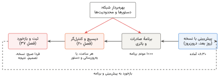
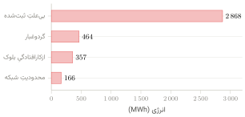
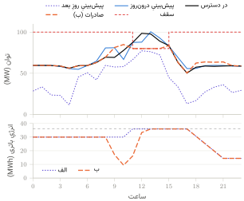
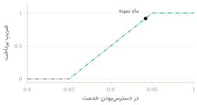
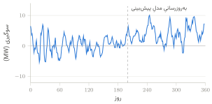
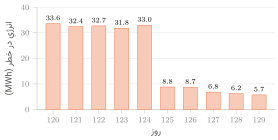
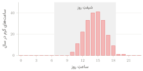

51 بهرهبرداری از نیروگاه
51.1 نقشهٔ فصل
پس از این فصل، خواننده میتواند:
- سازمانِ بهرهبرداری را از سابقههایش بسنجد: پوششِ نقشها در هر شیفت، تحویلِ شیفت با فهرست، دفترِ بهرهبرداری و موعدِ برنامه.
- بهرهبرداریِ عادی و غیرعادی را با عدد بخوانَد: انرژیِ ازدسترفته به ازای علت، باتری در حدهایش، قطعِ ارتباط، سیلِ هشدار و بازگردانی پس از خاموشی.
- یک شیفت را با پیشبینیِ تازه، محدودیتِ صادرات و باتریِ نزدیکِ حدش اداره کند و تصمیمها، خبرها و درسها را ثبت کند.
- تضمینِ بهرهبرداری را نگه دارد: مجوزِ کار، گزارشِ رخداد، بازبینیِ روشها و حدهای بهرهبرداری.
- بهرهبرداریِ تجاری و پیشبینیمحور را بی آنکه پیشبینی را تضمین بداند پیش ببرد: دادهٔ تسویه، عدمِ تعادل، سوگیریِ پیشبینی، ذخیره و خدمتِ شبکه.
- سامانههای کمکی، آمادگیِ آتش، آب و داراییهای صادرات را با بازهها و سابقههایشان اداره کند.
- تعهدهای اجتماعی، دفترِ داراییها و پیکربندی، و آمادگیِ اضطرار را در سالِ بهرهبرداری نگه دارد.
پیشنیازها: کنترلِ نیروگاه (فصل 20)، پایشِ عملکرد (فصل 37) و راهاندازی و تحویل (فصل 50).
- چرا ساعتِ بیثبت در دفترِ بهرهبرداری دلیلِ نبودِ رخداد نیست؟
- اگر پیشبینیِ درونروز ۲۰ مگاوات بالاتر از برنامه باشد و باتری تقریباً پر، چه میکنید؟
- چرا خدمتِ شبکهای که نمیشود داد باید فوراً اعلام شود؟
- دفترِ داراییها پس از تعویضِ یک مبدّل چه چیزی لازم دارد؟
پاسخها: (۱) چون دفتر دستکم گشتِ ساعتی را مینویسد و «هیچ» را باید نوشت، نه فرض کرد؛ (۲) پیش از اوج جا باز میکنید و کار را ثبت میکنید؛ (۳) چون خدمتِ ناممکن نباید ممکن به نظر برسد؛ (۴) برچسب، شمارهٔ سریال، پیکربندی و سابقهٔ آزمون، از راهِ روشِ تغییر. اگر دو پرسش یا بیشتر را نتوانستید، بخش 20.3.6، بخش 20.6.5، بخش 37.2.9 و بخش 49.12 را مرور کنید.
جایگاهِ این فصل در نیروگاهِ P. فصلِ ۵۰ نیروگاه را با فهرستی از استثناها تحویلِ بهرهبرداری داد. این فصل سالِ نخستِ بهرهبرداری را با یک بهرهبردارِ ساختگی و یک قراردادِ بهرهبرداری و نگهداریِ ساختگی دنبال میکند (A-522 تا A-529). دادهها سالِ بهرهبرداریِ فصلِ ۳۷ (مدلِ ۱۵.۱ با نوفه و مشکلهای کاشتهشده)، پیشبینیهای فصلهای ۱۵ و ۲۰ و کنترلگرِ فصلِ ۲۰ است. فصلهای ۲۰، ۲۹، ۳۲، ۳۳، ۳۵ تا ۳۷ و ۵۰ هر کدام چیزی طراحی کردند. این فصل همه را از دیدِ بهرهبردار اجرا میکند و مبنای D-055 را میسازد.
افراد، دادهها و رخدادها ساختگیاند و حدها آموزشی. این فصل اختیار، سابقهها و تصمیمها را آموزش میدهد، نه روشِ کلیدزنی یا کار روی تجهیزِ برقدار. هر کار با مجوزِ کار و به دستِ فردِ مجاز است (بخش 32.2.4، بخش 50.2). امنیتِ سایبری فقط تدافعی است (فصل 36) و جزئیاتِ امنیتِ فیزیکی نمیآید. پیشبینی هرگز تضمین نیست. قاعدههای بازار یا قرارداد در هر کشور جدا وارسی میشوند (فصلهای ۵۴ تا ۵۸). تعهدهای اجتماعی فقط همانهاییاند که تأیید شدهاند.
51.2 الف. سازمانِ بهرهبرداری
اتاقِ کنترل نیروگاه را شبانهروز میگرداند. چهار نقش در هر شیفت لازماند: اپراتورِ اتاقِ کنترل که نمایشگرها، هشدارها و دستورها را دنبال میکند؛ سرپرستِ شیفت که تصمیمها را میگیرد و با بهرهبردارِ شبکه و میزِ تجاری حرف میزند؛ فردِ مجاز برای کلیدزنی (بخش 50.2)؛ و امدادگر. سه سند کارِ روزانه را نگه میدارند: دفترِ بهرهبرداری که هر رخداد، تصمیم و خبر را با ساعت ثبت میکند؛ فهرستِ تحویلِ شیفت که چیزهایی را که شیفتِ بعد باید بداند منتقل میکند؛ و برنامهٔ روزانه که از پیشبینی ساخته و به بهرهبردارِ شبکه داده میشود (شکل 51.1).

51.2.1 پوششِ نقشها در هر شیفت
ایده. فهرستِ شیفتها نقش به نقش با نیاز سنجیده میشود، نه با شمارِ افراد.
people qualified for each role, by shift (need in brackets)
role A B C D
control-room operator 2 2 1 2 (2)
shift lead 1 1 1 1 (1)
authorised person (HV) 1 2 0 1 (1)
first aider 2 1 1 0 (1)
gaps:
control-room operator on shift C
authorised person (HV) on shift C
first aider on shift D
shift C has one operator and no authorised person; shift D
no first aider: a roster is checked role by role, not by
head count (ch 50 authorised persons)مثال 51.1 (شیفتی بیکلیدزن، شیفتی بیامدادگر) پرسش. کدام شیفتها کمبود دارند؟
پاسخ. شیفتِ C یک اپراتور و هیچ فردِ مجاز ندارد. شیفتِ D امدادگر ندارد.
تفسیر. شمارِ کلِ افرادِ هر شیفت کافی به نظر میرسد. فقط وارسیِ نقش به نقش کمبود را نشان میدهد. همان کمبودِ فردِ مجازِ فصلِ ۵۰ (مثال 50.25) در سالِ بهرهبرداری هنوز بسته نشده است.
51.2.2 تحویلِ شیفت
ایده. تحویلِ شیفت با یک فهرست انجام میشود: وضعِ نیروگاه و حدها، باتری و برنامهاش، مجوزها و جداسازیهای باز، هشدارهای فعال و صاحبانشان، دستورهای بهرهبردارِ شبکه، نسخهٔ پیشبینی، هشدارهای هوا و افرادِ درونِ ساختگاه.
shift handover checklist (one handover, 18:00)
[x] plant state and limits
[x] battery SOC and plan
[x] open permits and isolations
[ ] active alarms and their owners
[x] grid operator instructions in force
[ ] forecast version in use
[x] weather warnings
[x] people on site
2 items not passed on: the alarms nobody owns and the
forecast version in use - the next shift re-reads the old
forecast and inherits alarms it believes are being handledمثال 51.2 (هشدارهایی که کسی مالکشان نیست) پرسش. چه چیزی منتقل نشد و پیامدش چیست؟
پاسخ. هشدارهای فعال با صاحبانشان و نسخهٔ پیشبینیِ در دستِ کار.
تفسیر. شیفتِ بعد پیشبینیِ کهنه را دوباره میخوانَد و هشدارهایی را به ارث میبرد که گمان میکند کسی به آنها رسیدگی میکند. فهرست برای همین است: چیزی که در سرِ شیفتِ قبل است، در فهرست نوشته میشود.
51.2.3 دفترِ بهرهبرداری
ایده. دفتر دستکم یک گشتِ ساعتی دارد: وضعِ نیروگاه، هشدارها و حدها. ساعتِ بیثبت معنایی ندارد.
a week of operating log entries per hour: 287 entries, 21 silent hours
silent hours between 00:00 and 06:00: 7 of 21
a silent hour is not proof that nothing happened: the log
records at least the hourly round (plant state, alarms,
limits) so that 'nothing' is written, not assumedمثال 51.3 (بیستویک ساعتِ خاموش) پرسش. چند ساعت در هفته بیثبت مانده است؟
پاسخ. ۲۱ ساعت، ۷ تا از آنها میانِ نیمهشب تا ساعتِ شش.
تفسیر. ساعتِ خاموش ثابت نمیکند که چیزی رخ نداد. اگر رخدادی بعداً بررسی شود، همان ساعتها خالیاند. گشتِ ساعتی «هیچ» را مینویسد تا «هیچ» فرض نشود.
51.2.4 موعدِ برنامه و رسیدنِ پیشبینی
ایده. برنامهٔ روزِ بعد موعدی دارد. پیشبینی پیش از آن میرسد و اپراتور برای ساختنِ برنامه زمان لازم دارد.
day-ahead schedule due 10:00; forecast arrival over a week
day 1: 8:30
day 2: 8:36
day 3: 9:48 less than an hour to work with
day 4: 8:24
day 5: 10:24 less than an hour to work with
day 6: 8:42
day 7: 8:30
2 days left under an hour (one arrived after the deadline):
the procedure names a fallback - yesterday's forecast with
today's weather update - and the record says it was usedمثال 51.4 (پیشبینیای که پس از موعد رسید) پرسش. در کدام روزها کمتر از یک ساعت وقت ماند؟
پاسخ. روزهای ۳ و ۵. در روزِ ۵ پیشبینی پس از موعد رسید.
تفسیر. روش یک راهِ جایگزین دارد: پیشبینیِ دیروز با بهروزرسانیِ هوای امروز. سابقه میگوید کدام به کار رفت. برنامهای که بیسابقه با پیشبینیِ دیگری ساخته شود، بعداً قابلِ توضیح نیست.
51.2.5 شبهای پیاپی
ایده. فهرستِ شیفت برای خستگی هم وارسی میشود: شمارِ شبهای پیاپیِ هر نفر با حدِ آموزشی.
ten-day rota (D day, N night, O off): consecutive nights
against a teaching limit of 4
operator 1 NNNNNNDDOO
operator 2 DDNNNOODDN
operator 3 NNNNNDDOOO
shift lead A DDDNNNOODD
authorised person NNNNNNNOOO
over the limit: operator 1 (6), operator 3 (5), authorised person (7)
the authorised person works seven nights because nobody else
covers shift C (lesson A): the roster gap becomes a fatigue
risk on the very person who switchesمثال 51.5 (فردِ مجازی که هفت شب کار کرد) پرسش. چه کسانی بیش از حد شب کار کردند؟
پاسخ. اپراتورِ ۱ شش شب، اپراتورِ ۳ پنج شب و فردِ مجاز هفت شب.
تفسیر. فردِ مجاز هفت شب کار کرد چون کسِ دیگری شیفتِ C را نمیپوشاند (مثال 51.1). کمبودِ فهرست به خطرِ خستگی روی همان کسی تبدیل شد که کلید میزند.
51.2.6 بازخوانیِ دستورها
ایده. هر دستورِ بهرهبردارِ شبکه بازخوانی و با ساعت ثبت میشود.
grid operator's instructions in a week: repeated back and logged?
cap export 80 MW 11-15 repeat-back yes time yes
hold Q at 0 Mvar repeat-back yes time NO
open WS3 for the network owner's work repeat-back NO time yes
release cap repeat-back yes time yes
reduce ramp to 5 MW/min repeat-back NO time NO
2 not repeated back, 2 without a time: an instruction
that was not read back may have been heard wrong; one
without a time cannot be matched to the plant's response
in a dispute - both are a line in the shift-lead checkمثال 51.6 (دستوری که شاید اشتباه شنیده شد) پرسش. کدام دستورها بازخوانی یا ثبتِ ساعت ندارند؟
پاسخ. دو دستور بیبازخوانی، بازکردنِ WS3 و کاهشِ شیب، و دو دستور بیساعت.
تفسیر. دستورِ بازخوانینشده شاید اشتباه شنیده شده باشد. دستورِ بیساعت در اختلاف با پاسخِ نیروگاه جفت نمیشود. هر دو در وارسیِ سرپرستِ شیفت میآیند.
51.2.7 چند نفر برای یک پستِ شبانهروزی
ایده. پستی که شبانهروز پر است 8,760 ساعت در سال کار میخواهد. هر نفر پس از مرخصی، آموزش و بیماری کمتر از آن کار میکند، پس شمارِ لازم از شمارِ پستها ضربدر چهار بیشتر است.
\[ N = \frac{n_\text{post} \times 8\,760}{h_\text{person}} \tag{51.1}\]
posts filled around the clock: 4 (first aid is a qualification)
hours a person can work a year: 2,184 - leave 200
- training 120 - sickness 60 = 1,804
people needed: 4 x 8,760 / 1,804 = 19.4; on the roster: 15
short by 4.4 people = 7,980 h of overtime a year,
532 h for each person on the roster: four shifts
of four are not enough once leave and training are counted
(lesson A)مثال 51.7 (چهار شیفتِ چهارنفره کافی نیست) پرسش. با چهار پستِ شبانهروزی، چند نفر لازم است و کمبود چند ساعت اضافهکاری میشود؟
پاسخ. \(4 \times 8\,760/1\,804 = 19.4\) نفر در برابرِ ۱۵ نفرِ فهرست. کمبودِ 4.4 نفر یعنی 7,980 ساعت اضافهکاری در سال، ۵۳۲ ساعت برای هر نفر.
بررسیِ معقولبودن. چهار شیفتِ چهارنفره ۱۶ نفر است، پیش از هر مرخصی. ۱۵ نفر حتی به این عدد نمیرسد و همان کمبودِ شیفتِ C است (مثال 51.1).
تفسیر. اضافهکاری همان خستگیِ مثال 51.5 است، این بار با عدد. بودجهٔ کارکنانِ بهرهبرداری از معادلهٔ 51.1 ساخته میشود، نه از شمارِ پستها.
51.2.8 طولِ تحویلِ شیفت
ایده. دقیقههای هر تحویل و شمارِ قلمهای فهرستِ جاافتاده کنارِ هم گذاشته و ضریبِ همبستگیشان حساب میشود.
ten handovers: minutes taken and checklist items missed
minutes 8 15 12 6 20 9 14 5 18 11
missed 2 0 1 3 0 1 0 3 0 1
correlation -0.91; items missed on average: under 10 min 2.2,
10 min or more 0.3
a correlation is not a cause - a busy shift both hurries the
handover and has more to hand over - but the remedy is the
same: the checklist is read item by item, whatever the clockمثال 51.8 (تحویلِ کوتاه و قلمهای جاافتاده) پرسش. طولِ تحویل با قلمهای جاافتاده چه رابطهای دارد؟
پاسخ. ضریبِ همبستگیِ −0.91. تحویلهای زیرِ ده دقیقه بهطورِ میانگین 2.2 قلم جا انداختند و بقیه 0.3.
تفسیر. همبستگی علت نیست: شیفتِ شلوغ هم تحویل را شتاب میدهد و هم چیزهای بیشتری برای تحویل دارد. ولی چاره یکی است: فهرست قلم به قلم خوانده میشود، هر قدر هم ساعت دیر باشد (مثال 51.2).
- چهار نقشِ هر شیفت کداماند؟
- سه سندِ کارِ روزانه را نام ببرید.
- چرا فهرستِ شیفت نقش به نقش وارسی میشود؟
- هشت قلمِ فهرستِ تحویلِ شیفت را بگویید.
- گشتِ ساعتی چه چیزی را ثبت میکند؟
- اگر پیشبینی پس از موعد برسد، روش چه میگوید؟
- شکل 51.1 را بخوانید.
51.3 ب. بهرهبرداریِ عادی و غیرعادی
بهرهبرداریِ عادی یعنی نیروگاه تا جایی که شبکه و هوا اجازه میدهند صادر میکند و باتری برنامهاش را دنبال میکند. بهرهبرداریِ غیرعادی یعنی چیزی این را عوض کرده است: کاهشِ تولید به دستورِ شبکه، محدودیتِ صادرات، باتری در حدش، ازکارافتادگی، سیلِ هشدار، قطعِ ارتباط یا خاموشی. برای هر کدام یک روشِ نوشتهشده هست و هر کدام در دفتر یک علت میگذارد.
def lost_energy(available, exported, cause) -> dict:
"""Energy available but not exported, by the cause recorded for each
hour (MWh for hourly MW). Hours with a loss and no cause go to
'unexplained'."""
gap = np.asarray(available, float) - np.asarray(exported, float)
lost = np.clip(gap, 0, None)
out: dict[str, float] = {}
for h, x in enumerate(lost):
if x <= 1e-9:
continue
c = cause.get(h) or "unexplained"
out[c] = out.get(c, 0.0) + float(x)
return out51.3.1 انرژیِ ازدسترفته به ازای علت
ایده. هر ساعت انرژیِ در دسترس با صادراتِ واقعی مقایسه و کمبود به علتِ ثبتشدهٔ آن ساعت نسبت داده میشود (بخش 37.2.9).
energy available but not exported in the first year, by recorded cause
cause MWh
unexplained 2,868
soiling 464
PV block outage 357
grid restriction 166
total 3,855 MWh; with a recorded cause 987
'unexplained' is mostly the ordinary scatter of an hour around
its expectation (both ways - only the shortfalls are summed
here); a cause is recorded when the operator knows one, and
the monthly review (ch 37) works on the named ones
مثال 51.9 (سهچهارمِ بینام) پرسش. چه سهمی از انرژیِ ازدسترفته علتِ ثبتشده دارد؟
پاسخ. 987 از 3,855 MWh: گردوغبار 464، ازکارافتادگیِ بلوک 357 و محدودیتِ شبکه 166 MWh.
تفسیر. «بیعلت» بیشتر پراکندگیِ عادیِ هر ساعت پیرامونِ انتظار است. هر دو سو هست، ولی اینجا فقط کمبودها جمع شدهاند. علت وقتی ثبت میشود که اپراتور آن را میداند، و بازبینیِ ماهانهٔ فصلِ ۳۷ روی علتهای نامدار کار میکند.
51.3.2 باتری در حدهایش
ایده. کنترلگرِ فصلِ ۲۰ حدهای حالتِ شارژ و کفِ ذخیرهٔ خدمت را نگه میدارد (بخش 20.3.6). در یک سال با برنامهٔ روزانهٔ ثابت شمرده میشود باتری چند ساعت در حدهایش بود.
the battery over the year with a fixed daily shift (6 MW in at
10-15, out at 18-22), reserve 5 MW for an hour kept (ch 20)
hours at the upper limit (36 MWh): 1454
hours at the service floor (9.4 MWh): 13
controller alarms: 375
a battery near its limits is the normal state of a plan that
does not look at the forecast: the shift of lesson D adjusts
the plan when the day is not ordinaryمثال 51.10 (هزار و چهارصد ساعت در سقف) پرسش. باتری چند ساعت در سقف و چند ساعت در کفِ خدمت بود؟
پاسخ. 1,454 ساعت در 36 MWh و ۱۳ ساعت در کفِ 9.4 MWh، با ۳۷۵ هشدارِ کنترلگر.
تفسیر. باتریِ نزدیکِ حدها حالتِ عادیِ برنامهای است که به پیشبینی نگاه نمیکند. شیفتِ بخشِ «ت» برنامه را وقتی روز عادی نیست تنظیم میکند.
51.3.3 قطعِ ارتباطِ اسکادا
ایده. اگر پیوندِ کنترلگر قطع شود، کنترلگر سقفِ صادراتِ جاری را نگه میدارد و پس از مهلت، باتری را به حالتِ پشتیبان میبرد (بخش 20.3.7).
SCADA link to the controller lost for 3 h from 14:00 (day 34)
timeout 1 h, then the battery goes to its fallback (idle)
hours on fallback: 2 (15:00, 16:00)
the export cap in force is held; no new instruction reaches
the plant: the operator rings the grid operator, logs the
time, and the OT team (ch 36) owns the link - the service
is suspended while the controller cannot be reached (lesson J)مثال 51.11 (دو ساعت در حالتِ پشتیبان) پرسش. در قطعِ سهساعته، باتری چند ساعت در حالتِ پشتیبان بود؟
پاسخ. دو ساعت، ۱۵:۰۰ و ۱۶:۰۰، پس از مهلتِ یکساعته.
تفسیر. دستورِ تازه به نیروگاه نمیرسد. اپراتور به بهرهبردارِ شبکه زنگ میزند و ساعت را ثبت میکند. گروهِ فناوریِ عملیاتی صاحبِ پیوند است (فصل 36). خدمت تا وقتی کنترلگر در دسترس نیست معلق میشود (بخشِ «د»).
51.3.4 سیلِ هشدار
ایده. شمارِ هشدار در هر ساعت با هدفِ فلسفهٔ هشدارِ فصلِ ۳۵ مقایسه میشود (بخش 35.4.2).
alarms per hour in the control room over a month (teaching target 6)
mean 3.3, hours over the target 28, worst hour 53
the floods were two afternoons (day 4, day 18): a feeder trip
raised the alarms of every converter on it at once - the
alarm philosophy of ch 35 groups them under the feeder; the
operator handles the cause, not the listمثال 51.12 (پنجاهوسه هشدار در یک ساعت) پرسش. کجا از هدف گذشت و چرا؟
پاسخ. ۲۸ ساعت بالای ۶، و بدترین ساعت ۵۳ هشدار، در دو بعدازظهر با قطعِ یک تغذیه.
تفسیر. قطعِ تغذیه هشدارِ همهٔ مبدّلهای آن را با هم بالا آورد. فلسفهٔ هشدار آنها را زیرِ تغذیه گروه میکند. اپراتور به علت رسیدگی میکند، نه به فهرست.
51.3.5 بازگردانیِ صادرات پس از خاموشی
ایده. پس از بازگشتِ شبکه، نیروگاه پلهپله و هر پله با اختیارِ خودش بازمیگردد (بخش 50.9.2، بخش 50.6.5).
restoration of export after a blackout (minutes from grid back)
grid back at the POC 0
auxiliaries restarted (ch 50 restart) 23
33 kV bus energised, protection checked 38
wind feeders WS1-3 one by one 58
PV feeders PVF1-3 73
battery feeder and controller back 83
export released in steps to the cap 113
113 minutes to full export; each step under its own
authority (ch 50 energisation order) and the grid operator's
instruction for the export steps - the procedure OP-05 is
the one past its review (lesson C)مثال 51.13 (صدوسیزده دقیقه تا صادراتِ کامل) پرسش. بازگردانی چقدر طول میکشد و کدام روش آن را راه میبرد؟
پاسخ. 113 دقیقه. روشِ OP-05، همان که از بازبینی گذشته است (مثال 51.26).
تفسیر. پلههای صادرات با دستورِ بهرهبردارِ شبکه است. روشی که کمتر از همه به کار میرود و بیش از همه لازم است، کهنهترین روش است. بازبینیِ آن با آزمونِ راهاندازیِ دوبارهٔ فصلِ ۵۰ همراه میشود.
51.3.6 ازکارافتادگیها و زمانِ بازگشت
ایده. هر ازکارافتادگیِ اجباری با ساعتهایش و سهمِ انتظار برای قطعه، دسترسی یا مجوز ثبت میشود (بخش 37.6).
forced outages of the first year (hours down, of which waiting)
T03 converter 46 h waiting 30 h
T07 pitch 18 h waiting 6 h
PVF2-1 inverter 70 h waiting 52 h
T11 yaw 9 h waiting 2 h
WS2 feeder 4 h waiting 1 h
PVF1-3 combiner 26 h waiting 20 h
T05 gearbox oil 31 h waiting 12 h
BESS-A PCS 22 h waiting 15 h
8 outages, 226 h; mean time to restore 28.2 h
waiting for parts, access or permits 138 h = 61% of the time
the repair itself is the smaller part: spares, access and
permits are where availability is won (ch 37 waiting,
ch 52 maintenance)مثال 51.14 (انتظار، بیشتر از تعمیر) پرسش. میانگینِ زمانِ بازگشت و سهمِ انتظار چقدر است؟
پاسخ. هشت ازکارافتادگی، 226 ساعت، میانگینِ 28.2 ساعت. 138 ساعت، یعنی 61 %، انتظار بود.
تفسیر. خودِ تعمیر بخشِ کوچکتر است. یدک، دسترسی و مجوز جاییاند که دسترسپذیری به دست میآید. فصلِ ۵۲ همین را با سابقههای نگهداری پیش میبرد.
51.3.7 گذر از حدِ صادرات
ایده. صادرات با دادههای یکدقیقهای با حد مقایسه و هر گذر با علتش ثبت میشود (بخش 20.3.1).
export at the POC on a capped day, 1-minute values, limit 100 MW
minutes above the limit: 4; highest 103.5 MW
4 of them in one gust, before the controller's next
cycle: each is an operating-limit excursion recorded with
its cause; the controller holds a margin below the limit
for that reason (ch 20 export)مثال 51.15 (چهار دقیقه در یک تندباد) پرسش. چند دقیقه صادرات بالای حد بود و چرا؟
پاسخ. ۴ دقیقه با بیشینهٔ 103.5 MW، همه در یک تندباد پیش از چرخهٔ بعدیِ کنترلگر.
تفسیر. هر دقیقه یک گذر از حدِ بهرهبرداری است که با علتش ثبت میشود. کنترلگر برای همین حاشیهای زیرِ حد نگه میدارد.
51.3.8 رانشِ حالتِ شارژ میانِ دو واسنجی
ایده. برآوردِ حالتِ شارژِ باتری روز به روز میلغزد و فقط شارژِ واسنجی، رسیدن به بالای پنجره، آن را درست میکند. منحنیِ تختِ لیتیوم-آهن-فسفات خطا را در میانهٔ پنجره پنهان میکند (فصل 45).
battery SOC estimate drifts 0.35 %/day until a full charge recalibrates it
days with a full charge in a month: 2, 3, 9, 17, 18, 29
longest gap 11 days: error up to 3.8 % against a 2 % margin
the margin allows 5.7 days: a rule that asks for
a calibration charge after five days without one keeps the
service floor honest (ch 45 lesson: the flat LFP curve
hides SOC error between 20 and 80 %)مثال 51.16 (یازده روز بیواسنجی) پرسش. بیشترین خطای برآورد در این ماه چقدر است؟
پاسخ. فاصلهٔ روزِ ۱۸ تا ۲۹، یازده روز: \(11 \times 0.35 = 3.8\) درصد، در برابرِ حاشیهٔ ۲ درصد.
تفسیر. حاشیه 5.7 روز را تاب میآورد. قاعدهٔ «پس از پنج روزِ بیشارژِ کامل، یک شارژِ واسنجی» کفِ خدمت را درست نگه میدارد. هزینهاش کمی انرژی و جایی در برنامه است که روشِ بهرهبرداری مینویسد.
51.3.9 دنبالکردنِ نقطهٔ تنظیمِ توانِ واکنشی
ایده. پاسخِ نیروگاه به نقطهٔ تنظیمِ توانِ واکنشی، پس از زمانِ نشست، با رواداری مقایسه میشود. هر بازهٔ بیرون از رواداری یا خطای کنترل است یا حدِ توانایی.
reactive set-point following, 10-minute values, tolerance +/-1.5 Mvar
k set capability measured
0 0 33.0 0.0
1 0 33.0 0.0
2 10 33.0 8.0
3 10 32.0 9.6
4 10 31.0 9.9
5 20 30.6 18.0
6 20 30.6 19.6
7 20 18.0 18.3 OUT
8 20 18.0 18.1 OUT
9 5 30.0 7.6
10 5 33.0 5.5
11 0 33.0 1.1
intervals out of tolerance after settling: 2
each is a capability limit (two PV blocks off), not a control
fault: the operator tells the grid operator the reduced
capability at once, rather than letting the error standمثال 51.17 (دو بازه در حدِ توانایی) پرسش. چند بازه پس از نشست بیرون از رواداریاند و چرا؟
پاسخ. دو بازه، ۷ و ۸: نقطهٔ تنظیم 20 Mvar بود و توانایی با دو بلوکِ خاموشِ فتوولتائیک 18 Mvar.
تفسیر. خطای کنترل نبود، حدِ توانایی بود. بهرهبردار کاهشِ توانایی را همان لحظه به بهرهبردارِ شبکه میگوید، نه اینکه خطا بماند تا در گزارشِ ماهانه دیده شود.
51.3.10 پاسخ به دستورِ سقف و حدِ شیب
ایده. کنترلگر با حدِ شیبِ 8 MW/min برای کاهشِ \(\Delta P\) دستکم \(\Delta P/8\) دقیقه وقت میخواهد. این زمان با مهلتِ دستور مقایسه میشود.
cap instructions against the 8 MW/min ramp limit of the controller
before cap allowed min needed min
96 80 10 2.0
140 80 10 7.5
150 60 10 11.2 LATE
120 100 5 2.5
110 30 15 10.0
1 instruction(s) cannot be met at the ramp limit: whether a
cap overrides the ramp limit is the grid operator's rule;
the procedure states it, and the controller is set to
match - the first time is not the night it is neededمثال 51.18 (دستوری که با حدِ شیب نمیرسد) پرسش. کدام دستور در مهلت نمیرسد؟
پاسخ. کاهش از 150 به 60 MW: \(90/8 = 11.2\) دقیقه در برابرِ مهلتِ ۱۰ دقیقه.
تفسیر. اینکه دستورِ سقف بر حدِ شیب مقدم است یا نه، قاعدهٔ بهرهبردارِ شبکه است. روش آن را مینویسد و کنترلگر مطابقش تنظیم میشود. نخستین بار نباید شبی باشد که لازم است (مثال 51.28).
51.3.11 کانتینرهای باتری در دسترس
battery: eight containers, hours out of service in the first year
0 0 120 0 36 0 410 0
energy availability 99.19%; containers never out: 5 of 8
container 7 alone is 72% of the lost container-hours
(a cooling fault waiting for a part): one bad unit sets the
battery's availability (ch 19 spares)مثال 51.19 (یک کانتینر و سهچهارمِ ساعتهای ازدسترفته) پرسش. دسترسپذیریِ انرژیِ باتری چقدر است و چه کسی آن را تعیین میکند؟
پاسخ. 99.19 %. کانتینرِ ۷ با ۴۱۰ ساعت 72 % ساعتهای ازدسترفته است.
تفسیر. یک خرابیِ سرمایش که منتظرِ قطعه ماند، دسترسپذیریِ همهٔ باتری را تعیین کرد. یدکِ بحرانی همان درسِ فصلِ ۱۹ است و انتظار همان درسِ مثال 51.14.
51.3.12 برداشتِ شبانه از شبکه
ایده. در ساعتهایی که نیروگاه کمتر از مصرفِ خودش تولید میکند، از شبکه برمیدارد. این برداشتِ شبانه از شبکه در کنتور جدا ثبت و صورتحساب میشود.
hours the plant draws from the grid at the POC (data-pack year)
hours importing: 457; energy imported 150.7 MWh
most in month 1 (26.1 MWh), least in month 5 (4.9 MWh): calm nights
the import is metered and billed in its own register
(ch 48: a reversed CT would have shown it as export); it is
not 'lost energy' but a cost the operating report carriesمثال 51.20 (۴۵۷ ساعت برداشت) پرسش. نیروگاه چند ساعت و چقدر انرژی از شبکه برداشت؟
پاسخ. ۴۵۷ ساعت و 150.7 MWh. بیشترین در ماهِ ۱ با 26.1 MWh و کمترین در ماهِ ۵ با 4.9 MWh.
تفسیر. برداشت «انرژیِ ازدسترفته» نیست، هزینهای است که گزارشِ بهرهبرداری جدا میآورد. ترانسفورماتورِ جریانِ وارونه آن را صادرات نشان میداد (فصل 48).
51.3.13 حالتِ ایمنِ ردیابها در باد
ایده. ردیابهای فتوولتائیک وقتی تندباد به حدِ آموزشی میرسد به حالتِ ایمن میروند (فصل 10). این ساعتها و انرژیِ ازدسترفتهشان با بادی که سببشان شد ثبت میشوند.
PV trackers stow when the expected gust reaches 15 m/s (mean x 1.4, teaching)
daylight hours in stow over the data-pack year: 74
PV energy in those hours 1,359 MWh; lost at 25%: 340 MWh
= 0.31% of the PV year: stow protects the
trackers for a small price, and its hours are logged with the
wind that caused them (lost-energy cause 'stow', lesson B)مثال 51.21 (هزینهٔ کوچکِ حالتِ ایمن) پرسش. حالتِ ایمن در سالِ داده چقدر انرژی گرفت؟
پاسخ. ۷۴ ساعتِ روز با 1,359 MWh انرژیِ فتوولتائیک. با افتِ آموزشیِ ۲۵ درصد، 340 MWh، یعنی 0.31 % سالِ فتوولتائیک.
تفسیر. حالتِ ایمن ردیابها را با بهای کوچکی حفظ میکند. ساعتهایش در دفتر با علتِ «حالتِ ایمن» ثبت میشوند تا جزوِ سهچهارمِ بیعلتِ مثال 51.9 نشوند.
51.3.14 قطعِ مبدّلها به ازای علت
PV inverter trips of the first year by cause (100 trips)
DC insulation fault (morning dew) 37 cumulative 37%
grid over-voltage 22 cumulative 59%
fan / over-temperature 18 cumulative 77%
unknown 11 cumulative 88%
communication watchdog 9 cumulative 97%
IGBT stack fault 3 cumulative 100%
the two largest causes are 59% of the trips: dew on the DC
side every winter morning and over-voltage on light-load
afternoons - one for the maintainer, one for the grid study
(ch 28 voltage); 'unknown' is the share to shrink firstمثال 51.22 (دو علت و ششدهمِ قطعها) پرسش. دو علتِ بزرگ چه سهمی از قطعها دارند؟
پاسخ. 59 %: خطای عایقیِ سمتِ مستقیم با شبنمِ صبحگاهی (۳۷) و اضافهولتاژِ شبکه (۲۲). «نامعلوم» ۱۱ قطع است.
تفسیر. یکی کارِ نگهدارنده است و دیگری پرسشی برای مطالعهٔ شبکه (فصل 28). سهمِ «نامعلوم» نخستین سهمی است که باید کوچک شود، چون هیچ درسی از آن بیرون نمیآید.
51.3.15 توانِ واکنشی در شب
PV inverters kept on at night to give reactive power (10 x 3.0 kW standby)
night hours in the data-pack year 4,191; Q asked in 1,676 of them
energy drawn 50.3 MWh, at 60 u/MWh: 3,017 u
small against the service it gives, but it is real import:
whether night Q is paid, required or neither is the grid
operator's rule (ch 25: units off at night also changes the
plant's own Mvar)مثال 51.23 (واردکردنی کوچک ولی واقعی) پرسش. روشننگهداشتنِ مبدّلها برای توانِ واکنشیِ شبانه چقدر انرژی میبرد؟
پاسخ. از 4,191 ساعتِ شب، در 1,676 ساعت توانِ واکنشی خواسته شد: \(1\,676 \times 10 \times 3/1\,000 = 50.3\,\text{MWh}\)، حدودِ 3,017 واحد.
تفسیر. در برابرِ خدمتی که میدهد کوچک است، ولی بخشی از برداشتِ شبانهٔ مثال 51.20 است. اینکه توانِ واکنشیِ شبانه پرداختی، الزامی یا هیچکدام است، قاعدهٔ بهرهبردارِ شبکه است (فصل 25).
- بهرهبرداریِ عادی و غیرعادی را تعریف کنید.
- انرژیِ ازدسترفته چگونه به علت نسبت داده میشود؟
- چرا بیشترِ انرژیِ ازدسترفته «بیعلت» است؟
- باتریِ همیشه در سقف چه چیزی دربارهٔ برنامه میگوید؟
- کنترلگر در قطعِ ارتباط چه میکند؟
- سیلِ هشدار چگونه مهار میشود؟
- ترتیبِ بازگردانی پس از خاموشی را بگویید.
- شکل 51.2 را بخوانید.
51.4 پ. تضمینِ بهرهبرداری
تضمینِ بهرهبرداری یعنی بهرهبرداری با قاعدههایش انجام شده است، نه فقط اینکه نیروگاه کار کرده است. پنج سابقه آن را نشان میدهند: مرزهای اختیار (چه کسی چه کاری میتواند بکند)، مجوزهای کار و جداسازیها، گزارشِ رخدادها، حدهای بهرهبرداری و بازبینیِ روشها و آموزش. فصلِ ۳۲ این سامانه را طراحی کرد (بخش 32.2). اینجا سالِ نخستِ آن خوانده میشود.
51.4.1 مجوزهای کار در بهرهبرداری
ایده. مجوزها هر ماه شمرده میشوند: صادرشده، بیش از زمان مانده و برخوردِ جداسازی، یعنی دو مجوز روی یک نقطهٔ جداسازی.
permits to work in operation, first half-year
month issued overran isolation conflicts
1 42 2 0
2 38 1 0
3 55 6 1
4 61 4 0
5 47 3 2
6 40 1 0
283 permits, 17 overran (6.0%), 3 isolation conflicts
conflicts in months 3, 5; the busiest month (4, 61 permits) had
0: conflicts follow two jobs on one isolation point, not
volume - the permit office checks isolation points, not only
areas (ch 32, ch 50)مثال 51.24 (برخورد در ماههایی که شلوغترین نبودند) پرسش. برخوردهای جداسازی کِی رخ دادند و آیا با حجمِ کار همراه بودند؟
پاسخ. در ماههای ۳ و ۵. شلوغترین ماه، ماهِ ۴ با ۶۱ مجوز، برخوردی نداشت.
تفسیر. برخورد از دو کار روی یک نقطهٔ جداسازی میآید، نه از حجم. دفترِ مجوز نقطههای جداسازی را وارسی میکند، نه فقط محدودهها را (بخش 50.2.5).
51.4.2 گزارشِ رخدادها
ایده. هر رخدادِ گزارشدادنی در مهلتِ روش گزارش میشود. اینجا مهلت یک روز است.
reportable events: reported within 1 day?
feeder WS2 trip 0 d
inverter fire alarm (false) 1 d
worker slipped on the PV access track 4 d LATE
oil leak at T5 base 0 d
SCADA link lost 3 h 2 d LATE
near miss: crane boom near the 33 kV line 5 d LATE
3 late; two are safety events - the slip and the crane
near miss, whose lessons expire fastest; the SCADA loss is an
OT event with its own notice rule (ch 36) - a near miss
reported after five days is a memory, not a recordمثال 51.25 (شبهحادثهای که پس از پنج روز گزارش شد) پرسش. کدام رخدادها دیر گزارش شدند؟
پاسخ. سه رخداد: لغزیدنِ یک کارگر پس از ۴ روز، قطعِ پیوندِ اسکادا پس از ۲ روز و شبهحادثهٔ نزدیکشدنِ بازوی جرثقیل به خطِ 33 kV پس از ۵ روز.
تفسیر. دو گزارشِ دیر رخدادهای ایمنیاند که درسشان زودتر از همه کهنه میشود. قطعِ پیوند رخدادِ فناوریِ عملیاتی است و قاعدهٔ خبرِ خودش را دارد (بخش 36.4.17). شبهحادثهای که پس از پنج روز گزارش شود خاطره است، نه سابقه.
51.4.3 بازبینیِ روشها
ایده. هر روشِ بهرهبرداری سالی یک بار بازبینی میشود: با نیروگاهِ چونساخت، با رخدادها و با تغییرها.
operating procedures past their yearly review on 2029-06-01
OP-03 loss of SCADA reviewed 2027-11-01
OP-05 restoration after a blackout reviewed 2027-06-01
the two oldest are the ones used least and needed most:
loss of SCADA and restoration after a blackout - reviewed
against the plant as built and the ch 50 restart testمثال 51.26 (روشهایی که کمتر از همه به کار میروند) پرسش. کدام روشها از بازبینی گذشتهاند؟
پاسخ. OP-03 قطعِ اسکادا و OP-05 بازگردانی پس از خاموشی.
تفسیر. کهنهترین روشها همانهاییاند که کمتر از همه به کار میروند و بیش از همه لازماند. بازبینی با نیروگاهِ چونساخت و با آزمونِ راهاندازیِ دوبارهٔ فصلِ ۵۰ انجام میشود. روشی که هرگز تمرین نشده، روی کاغذ درست است.
51.4.4 مدیریتِ تغییر
ایده. هر تغییر در نیروگاه وقتی بسته میشود که نقشه، روش و آموزشش هم بهروز شده باشند (بخش 36.4.5).
changes of the first year: closed with their records?
inverter firmware 4.3 on block 2 missing: training
new alarm grouping by feeder missing: procedure
second RTU in the substation missing: drawings, procedure, training
export ramp limit 8 MW/min missing: procedure, training
4 of 5 changes are open; the second RTU has none of
the three - it is also the tag missing from the asset register
(lesson M); a change is closed when the plant, its records
and its people all know about itمثال 51.27 (تغییری که هیچ سابقهای نگرفت) پرسش. چند تغییر باز است و کدام بیش از همه؟
پاسخ. چهار از پنج. پایانهٔ دوردستِ دوم هیچیک از سه را ندارد.
تفسیر. همان پایانه برچسبی است که در دفترِ دارایی نیست (مثال 51.82). تغییر وقتی بسته است که نیروگاه، سابقههایش و آدمهایش همه از آن خبر داشته باشند.
51.4.5 دفترِ حدهای بهرهبرداری
ایده. هر حدِ بهرهبرداری سه جا نوشته است: سندِ مبدأ، تنظیمِ کنترلگر و روشِ بهرهبرداری. دفترِ حدهای بهرهبرداری هر سه را کنارِ هم میگذارد.
operating limits: source document, controller setting, procedure
export limit MW 100 100 100 connection agreement rev 3
ramp limit MW/min 8 8 10 grid operator instruction GI-07
battery SOC window % 12-88 12-88 12-88 battery maker letter
Q at full output Mvar 33 30.6 33 REQ-G05 with DEV-11
service reserve MW 5 5 5 service agreement
comms timeout h 1 1 1 control basis D-024
2 limits disagree: the ramp limit changed in the controller
but not in the procedure (the open change of round s); Q
is set to the 30.6 Mvar the plant can give under deviation
DEV-11 while the procedure still promises 33 - the operator
would offer what the plant cannot deliverمثال 51.28 (روشی که هنوز ۳۳ مگاوار وعده میدهد) پرسش. کدام حدها سه جا یکی نیستند؟
پاسخ. دو حد: حدِ شیب در کنترلگر 8 MW/min و در روش ۱۰، و توانِ واکنشی در کنترلگر 30.6 و در روش 33 Mvar.
تفسیر. حدِ شیب همان تغییرِ بازِ مثال 51.27 است. توانِ واکنشی همان عدولِ DEV-11 فصلِ ۵۰ است (بخش 50.8). بهرهبرداری که روش را میخوانَد، چیزی را پیشنهاد میکند که نیروگاه نمیدهد.
51.4.6 صلاحیتها و تاریخِ انقضا
ایده. ماتریسِ صلاحیت برای هر نفر هر دوره و تاریخِ انقضایش را دارد. فهرستِ شیفتِ ماهِ بعد فقط با صلاحیتهای معتبر در آن ماه ساخته میشود.
competence records on day 365: expired and expiring within 30 days
expired: AP-3 first aid
expired: lead A first aid
expires day 380: AP-1 HV authorisation
expires day 372: AP-3 HV authorisation
expires day 390: lead A switching
expires day 388: lead D switching
authorised persons still valid next month: 2 of 4 (AP-2, AP-4)
four shifts cannot each have one: the renewals are booked
now, or the roster of next month already has a holeمثال 51.29 (دو فردِ مجاز برای چهار شیفت) پرسش. چند فردِ مجاز در ماهِ بعد معتبرند؟
پاسخ. دو از چهار: AP-2 و AP-4. مجوزِ AP-1 و AP-3 در روزهای ۳۸۰ و ۳۷۲ تمام میشود و دو کمکهای اولیه هماکنون منقضیاند.
تفسیر. چهار شیفت هر کدام یک فردِ مجاز نمیگیرند. تمدیدها همین حالا رزرو میشوند، وگرنه فهرستِ ماهِ بعد از هماکنون سوراخ دارد.
51.4.7 ممیزیِ میدانیِ کاربردِ روشها
ایده. ممیز کارها را در میدان میبیند و میشمارد که چند کار با روشِ جاری در دست انجام شد. سهمِ دیدهشده با بازهٔ ویلسون گزارش میشود، چون نمونه کوچک است:
\[ \begin{aligned} &\tilde p \pm h, \qquad \tilde p = \frac{\hat p + z^2/(2n)}{1 + z^2/n},\\ &h = \frac{z}{1 + z^2/n}\sqrt{\frac{\hat p(1-\hat p)}{n} + \frac{z^2}{4n^2}} \end{aligned} \tag{51.2}\]
که در آن \(\hat p = k/n\) سهمِ دیدهشده، \(n\) شمارِ نمونه و \(z = 1.96\) برای ۹۵ درصد است.
field audit: 24 tasks observed, 17 done with the current procedure
share 71%, 95 % interval 51% to 85% (Wilson)
even the top of the interval is short of 'always': of the 7,
five were routine tasks done from memory and two used a
superseded copy - the audit finds what the procedure
register cannotمثال 51.30 (هفده از بیستوچهار) پرسش. چه سهمی از کارها با روشِ جاری انجام شد؟
پاسخ. \(17/24 = 71\) درصد، با بازهٔ ۹۵ درصدیِ ۵۱ تا ۸۵ درصد.
تفسیر. حتی بالای بازه از «همیشه» کمتر است. از هفت کار، پنج کارِ عادی از حافظه انجام شد و دو کار با نسخهٔ کهنه. ممیزی چیزی را مییابد که دفترِ روشها نمیبیند (مثال 51.26).
51.4.8 دورزدنها و تغییرهای موقت
ایده. هر دورزدنِ موقت، مسدودسازیِ هشدار یا مقدارِ تحمیلی در دفتری با تاریخ، تأییدکننده و مهلتِ بازبینی ثبت میشود. چیزی که موقت نامیده شده و ماندگار شده، یا برداشته میشود یا به تغییرِ دائمی بدل میشود.
overrides and temporary changes open on the last day (review after 14 days)
alarm inhibit T07 pitch battery 41 days approved
forced value PVF2 irradiance 3 days approved
bypass: BESS-A door switch 19 days NOT APPROVED
alarm inhibit SST fan 76 days approved
temporary jumper in WS3 panel 12 days NOT APPROVED
PPC Q limit 30.6 Mvar 120 days approved
4 older than 14 days, 2 never approved: a
bypassed door switch is a battery safety function out of
service - an impairment with its own permit; the Q limit is
not temporary at all and belongs in the limit register
(round t) and the deviation DEV-11مثال 51.31 (کلیدِ درِ باتری که دور زده شد) پرسش. چند مورد از مهلتِ بازبینی گذشتهاند و چند مورد تأیید ندارند؟
پاسخ. چهار مورد بیش از ۱۴ روز باز است و دو مورد هرگز تأیید نشدهاند: دورزدنِ کلیدِ درِ BESS-A و سیمِ موقت در تابلوی WS3.
تفسیر. کلیدِ درِ دورزدهشده یک کارکردِ ایمنیِ باتری است که از کار افتاده: یک ازکارافتادگی با مجوزِ خودش. حدِ 30.6 Mvar اصلاً موقت نیست و جایش در دفترِ حدها (مثال 51.28) و عدولِ DEV-11 است.
51.4.9 بررسیِ رخدادها و اقدامهایشان
incident investigations: days to the report (target 30) and actions
near miss: crane over live line route 12 d actions 3, closed 3
trip of WS2 on a wrong setting 41 d actions 4, closed 2
first-aid case: heat 9 d actions 2, closed 2
BESS container door found open 33 d actions 3, closed 1
diesel failed to start in test 25 d actions 2, closed 0
2 late; actions closed 8 of 14 (57%)
a report on time with its actions open has not yet changed
anything: the register tracks actions to their evidence
(ch 32 lessons), not reports to their dateمثال 51.32 (گزارش بهموقع، اقدامِ باز) پرسش. چند بررسی دیر شد و چه سهمی از اقدامها بسته است؟
پاسخ. دو بررسی پس از ۳۰ روز. ۸ از ۱۴ اقدام بسته است، 57 %.
تفسیر. گزارشی که بهموقع آمده و اقدامهایش باز مانده، هنوز چیزی را عوض نکرده است. دفتر اقدامها را تا شاهدشان دنبال میکند، نه گزارشها را تا تاریخشان (فصل 32).
- پنج سابقهٔ تضمینِ بهرهبرداری کداماند؟
- برخوردِ جداسازی چیست و از کجا میآید؟
- چرا شبهحادثه باید زود گزارش شود؟
- قطعِ پیوندِ اسکادا با کدام قاعده گزارش میشود؟
- چرا روشهای کمکاربرد کهنه میشوند؟
- بازبینیِ یک روش با چه چیزهایی انجام میشود؟
51.5 ت. شبیهسازیِ یک شیفت
این بخش مثالِ کارشدهٔ اصلیِ فصل است: یک شیفتِ بهرهبرداری با پیشبینیِ تازه، محدودیتِ صادرات و باتریِ نزدیکِ حدِ بهرهبرداریاش. روز، روزِ ۳۴ از سالِ بستهٔ داده است: بادِ پیوسته و آفتابِ زمستانی، با تولیدی که ظهر به 98 MW میرسد. سه رخداد شیفت را میسازند:
- ساعتِ ۰۶:۰۰، تحویلِ شیفت: باتری با 30 MWh از 36 شروع میکند و برنامهٔ روزِ بعد ظهر شارژ میخواهد.
- ساعتِ ۰۹:۰۰، پیشبینیِ درونروز: حدودِ 20 MW بالاتر از برنامهٔ روزِ بعد در ساعتهای ۱۱ تا ۱۴.
- ساعتِ ۱۰:۰۰، دستورِ بهرهبردارِ شبکه: سقفِ صادراتِ 80 MW از ساعتِ ۱۱ تا ۱۵.
همان روز دو بار با کنترلگرِ فصلِ ۲۰ اجرا میشود (بخش 20.5). در الف شیفت برنامه را دنبال میکند. در ب شیفت بر پایهٔ بهروزرسانیِ ۰۹:۰۰ و خبرِ ۱۰:۰۰ عمل میکند: در ساعتهای ۹ و ۱۰ باتری را تا کفِ ذخیرهٔ خدمت تخلیه میکند تا جا باز شود، و زیرِ سقف میگذارد کنترلگر فقط سرریز را جذب کند.
def run(act, req, cap_known_h, reserve=True):
"""Play the day hour by hour. cap_known_h: hour from which the
controller is told the cap (the notice). Returns the hourly records."""
lim = s20.LIMITS
c = control.Controller(export_cap=lim["export_mw"], p_max=lim["bess_mw"],
e_min=lim["e_min"], e_max=lim["e_max"],
eta=lim["eta"], e=SOC0,
reserve_up=SERVICE[2] if reserve else 0.0)
rows = []
for h in range(24):
cap = None
if h >= cap_known_h:
cap = CAP["mw"] if CAP["start"] <= h < CAP["end"] else 100.0
r = c.step(h, float(act[h]), float(req[h]), cap, True)
rows.append(r)
return rows, c.alarms51.5.1 خطِ زمانیِ روز
day 34 of the data-pack year, MW at the POC; cap 80 MW 11:00-15:00
hour day-ahead intraday actual export A export B SOC A SOC B
6 51 59 59 59.4 59.4 30.0 30.0
7 42 65 63 63.1 63.1 30.0 30.0
8 60 81 70 69.5 69.5 30.0 30.0
9 58 81 69 69.3 81.3 30.0 17.1
10 58 67 78 77.8 84.9 30.0 9.4
11 66 88 87 80.0 80.0 36.0 16.1
12 77 88 98 80.0 80.0 36.0 33.3
13 76 100 98 80.0 80.0 36.0 36.0
14 72 93 89 80.0 80.0 36.0 36.0
15 45 83 84 83.6 83.6 36.0 36.0
16 33 69 63 63.2 63.2 36.0 36.0
17 13 56 50 50.3 50.3 36.0 36.0
18 17 56 57 62.4 62.4 30.6 30.6
19 27 59 59 63.8 63.8 25.2 25.2
20 33 60 58 63.4 63.4 19.8 19.8
21 36 59 59 63.8 63.8 14.4 14.4
A follows the day-ahead plan; B acts on the 09:00 update and the
10:00 notice: discharges 09-11 to make room, then lets the
controller absorb only the spill above the cap
51.5.2 مقایسهٔ دو شیفت
the two shifts compared (same weather, same plant, same limits)
strategy exported curtailed imbalance SOC 17:00 alarms
MWh MWh u MWh
A follow the plan 1580 46.0 5,937 36.0 3
B act on update 1599 23.8 3,321 36.0 1
acting on the update saved 22.2 MWh of curtailment and 2,616 u
of imbalance, and the evening service energy was still held:
yes; the plan was not wrong when written - it was
overtaken by the update at 09:00 and the notice at 10:00مثال 51.33 (برنامهای که درست نوشته شد و کهنه شد) پرسش. کدام شیفت کمتر کاهشِ تولید و عدمِ تعادل دارد، و ذخیرهٔ خدمتِ عصر چه شد؟
پاسخ. «الف»: 46.0 MWh کاهش و 5,937 واحد عدمِ تعادل. «ب»: 23.8 MWh و 3,321 واحد. «ب» 22.2 MWh و 2,616 واحد صرفهجویی کرد و انرژیِ خدمتِ عصر همچنان نگه داشته شد.
تفسیر. برنامه وقتی نوشته شد غلط نبود. بهروزرسانیِ ساعتِ ۹ و خبرِ ساعتِ ۱۰ آن را کهنه کردند. در «الف» باتری تا ساعتِ ۱۱ پر شد و جایی برای سرریزِ زیرِ سقف نماند. در «ب» تخلیهٔ پیش از اوج آن جا را ساخت. تخلیه فقط تا کفِ ذخیرهٔ خدمت رفت، 9.4 MWh، چون خدمتِ عصر همان قید است (مثال 51.95).
51.5.3 دفترِ شیفت
ایده. هر رخداد در دفتر با رخداد، تصمیم، کسی که خبر داده شد و کسی که تصمیم گرفت ثبت میشود.
def check_log(entries, required, hours=range(24)) -> dict:
"""entries: list of dicts with an 'hour' and fields. Returns entries
missing a required field and the hours with no entry at all."""
missing = [(e.get("hour"), f) for e in entries for f in required
if not e.get(f)]
seen = {e.get("hour") for e in entries}
silent = [h for h in hours if h not in seen]
return dict(missing=missing, silent=silent)shift log of strategy B (hour, event, decision, who was told, by whom)
06:00 handover: SOC 30 MWh (near 36), DA plan, no open permits
-> accept plan; watch SOC; told: -; by shift lead
09:00 intraday forecast +20 MW at 11-14
-> discharge 12 MW 09-11 to make room; told: trading desk; by operator
10:00 grid operator: export cap 80 MW 11:00-15:00
-> acknowledge; set the cap; re-declare; told: trading desk; by shift
lead
11:00 cap active; battery absorbing up to 20 MW
-> hold; told: MISSING; by operator
15:00 cap lifted
-> return to plan; told: grid operator; by operator
18:00 service window opens; SOC checked above the floor
-> service available; told: grid operator; by operator
entries missing a field: 11:00 told
the 11:00 entry does not say who was told the battery was
absorbing the spill: the controller did it, but the trading
desk's imbalance estimate needed it - a log is written for
the next reader, not for the writerمثال 51.34 (خبری که نوشته نشد) پرسش. کدام سطر ناقص است و چرا مهم است؟
پاسخ. سطرِ ساعتِ ۱۱:۰۰ نمیگوید به چه کسی گفته شد که باتری سرریز را جذب میکند.
تفسیر. کنترلگر کار را کرد، ولی برآوردِ عدمِ تعادلِ میزِ تجاری به آن نیاز داشت. دفتر برای خوانندهٔ بعدی نوشته میشود، نه برای نویسنده.
51.5.4 درسهای پس از رخداد
post-event learning, recorded the next morning
1. the day-ahead forecast was 19 MW low at 09-15: feed back
to the forecast provider with the version and the weather (ch 37)
2. the battery began the day at 30 of 36 MWh: the overnight plan
leaves room when a sunny, windy day is forecast
3. the restriction came with one hour's notice: ask the grid operator
whether planned restrictions can be notified day-ahead (ch 28)
4. the log missed one 'told' entry: add it to the shift-lead checkمثال 51.35 (چهار درس برای فردا) پرسش. شیفت چه چیزهایی را برای بهبود ثبت کرد؟
پاسخ. پیشبینیِ روزِ بعد در ساعتهای ۹ تا ۱۵ حدودِ 19 MW کم بود و با نسخه و هوا به ارائهدهنده بازخورد داده میشود. باتری روز را نزدیکِ سقف شروع کرد و برنامهٔ شبانه برای روزهای آفتابی و بادی جا میگذارد. محدودیت با یک ساعت خبر آمد و از بهرهبردارِ شبکه پرسیده میشود آیا محدودیتهای برنامهریزیشده را روزِ قبل اعلام میکند. سطرِ ناقصِ دفتر به وارسیِ سرپرستِ شیفت افزوده میشود.
تفسیر. درسها صبحِ روزِ بعد نوشته میشوند، پیش از آنکه جزئیات فراموش شوند. هر درس صاحب و تاریخ دارد. بی آن، همان روز دوباره تکرار میشود.
- سه رخدادِ شیفتِ روزِ ۳۴ را بگویید.
- شیفتِ «ب» چه کرد که «الف» نکرد؟
- چرا تخلیهٔ پیش از اوج فقط تا کفِ خدمت رفت؟
- چرا «ب» زیرِ سقف شارژِ اجباری نخواست؟
- چهار فیلدِ هر سطرِ دفتر را بگویید.
- درسهای پس از رخداد کِی نوشته میشوند و چرا؟
- شکل 51.3 را بخوانید: باتری در «الف» کِی پر شد؟
51.6 ث. بهرهبرداریِ تجاری
جایی که نیروگاه در بازار یا با قراردادِ خرید کار میکند، بهرهبرداری چند کارِ تجاری هم دارد: هماهنگیِ برنامه و دیسپچ، اعتبارسنجیِ دادهٔ کنتور، ورودیهای تسویه، سابقهٔ کاهشِ تولید و عدمِ تعادل با علتشان، گزارشِ عملکردِ قرارداد و رابط با طرفهای بازار. جایی که بازاری نیست، همین سابقهها برای قراردادِ خرید یا دستورهای بهرهبردارِ شبکه لازماند. قاعدههای بازار، قرارداد و قانونِ هر کشور جدا وارسی میشوند (فصلهای ۵۴ تا ۵۸). عددهای این بخش آموزشیاند.
51.6.1 اعتبارسنجیِ دادهٔ تسویه
ایده. پیش از فرستادنِ دادهٔ ماه برای تسویه، بازههای گمشدهٔ کنتورِ فروش پیدا و از کنتورِ وارسی با نشانه پر میشوند (بخش 48.2.11).
settlement inputs by month: scheduled, metered, missing meter intervals
month scheduled MWh metered MWh deviation missing intervals
1 21,400 20,950 -450 0
2 22,800 23,310 +510 12
3 27,100 26,420 -680 0
4 24,000 22,900 -1,100 4
5 30,200 30,850 +650 0
6 19,800 19,100 -700 30
months with missing intervals: 2, 4, 6 - each is filled
from the check meter (ch 48) with a flag before the file goes
to settlement; June's 30 intervals are a day's work to
validate, not a figure to estimateمثال 51.36 (سی بازهٔ گمشده در خرداد) پرسش. کدام ماهها بازهٔ گمشده دارند و چگونه پر میشوند؟
پاسخ. ماههای ۲، ۴ و ۶ با ۱۲، ۴ و ۳۰ بازه. از کنتورِ وارسی پر و نشاندار میشوند.
تفسیر. سی بازهٔ ماهِ ۶ یک روز کارِ اعتبارسنجی است، نه عددی برای برآورد. دادهٔ تسویهای که بینشانه پر شود، در اختلافِ بعدی قابلِ دفاع نیست (مثال 48.18).
51.6.2 هزینهٔ عدمِ تعادل
ایده. اختلافِ برنامه و کنتور در هر ماه با قیمتهای آموزشیِ عدمِ تعادلِ فصلِ ۲۰ هزینه میشود: کمبود گرانتر از مازاد (بخش 20.6.2).
imbalance cost by month (short 30, long 10 u/MWh, teaching)
month deviation MWh cost u
1 -450 13,500
2 +510 5,100
3 -680 20,400
4 -1,100 33,000
5 +650 6,500
6 -700 21,000
half-year 99,500 u; the short months cost three times
the long ones per MWh - a schedule that leans low (lesson I)
trades short penalties for long ones; whether that is
allowed is the market's or the contract's rule, verified
locally (ch 55-57)مثال 51.37 (کمبودی که سه برابر میارزد) پرسش. هزینهٔ نیمسال چقدر است و کدام ماهها بیشترین سهم را دارند؟
پاسخ. 99,500 واحد. ماهِ ۴ با 1,100 MWh کمبود 33,000 واحد.
تفسیر. کمبود در هر مگاواتساعت سه برابرِ مازاد میارزد. برنامهای که پایینتر از پیشبینی بسته شود، جریمهٔ کمبود را با جریمهٔ مازاد عوض میکند (بخش 51.10.3). اینکه چنین کاری مجاز است یا نه، قاعدهٔ بازار یا قرارداد است.
51.6.3 کاهشِ تولید به ازای دستوردهنده
ایده. کاهشِ تولید با این ثبت میشود که چه کسی و چرا دستور داد: بهرهبردارِ شبکه یا خودِ نیروگاه، برای امنیتِ شبکه، کارِ برنامهریزیشده یا دلیلِ اقتصادی.
curtailed energy of the first year by who ordered it and why (MWh)
grid operator, security of supply 166
grid operator, planned works 42
plant, export-limit margin 18
plant, economic (negative price) 0
total 226 MWh; ordered by the grid operator 208
the class decides who carries the loss under the contract
(compensated or not) - so the record names the instruction,
not only the energy; the rules are verified locallyمثال 51.38 (ردهای که میگوید چه کسی زیان را میپردازد) پرسش. چه سهمی از کاهش به دستورِ بهرهبردارِ شبکه بود؟
پاسخ. 208 از 226 MWh.
تفسیر. رده تعیین میکند زیان را زیرِ قرارداد چه کسی میپردازد. پس سابقه دستور را نام میبرد، نه فقط انرژی را. قاعدهها در هر کشور وارسی میشوند.
51.6.4 اعلامِ دوبارهٔ ظرفیتِ در دسترس
ایده. وقتی ظرفیتِ در دسترس بیش از آستانه جابهجا میشود، اعلامِ دوباره در مهلت به بهرهبردارِ شبکه فرستاده میشود، در کاهش و در بازگشت.
available capacity declared to the grid operator vs actual;
re-declare within the hour when it moves > 5 MW (teaching)
turbine out 06-10, PV block out 13-18; re-declarations sent at
07:00, 14:00, 18:00
hours with the declaration wrong by more than 5 MW: 5 (06, 10, 11, 12, 13)
both outages were re-declared an hour late, and the turbine's
return at 10:00 not at all: in two hours the grid operator
counted on 12 MW that was not there, in three it planned
without 12 MW that was - re-declaration is part of the
outage procedure, not an afterthoughtمثال 51.39 (بازگشتی که اعلام نشد) پرسش. در چند ساعت اعلام بیش از 5 MW اشتباه بود؟
پاسخ. پنج ساعت: ساعتهای ۶ و ۱۳ با 12 MW کمتر از اعلام، و ساعتهای ۱۰ تا ۱۲ با 12 MW بیشتر.
تفسیر. هر دو ازکارافتادگی یک ساعت دیر اعلام شدند و بازگشتِ توربین هیچگاه. اعلامِ دوباره بخشی از روشِ ازکارافتادگی است و در همان فهرستی میآید که ازکارافتادگی را ثبت میکند.
51.6.5 صورتحساب در برابرِ کنتور
invoiced energy against the main meter and SCADA (tolerance 0.5%)
month invoiced meter SCADA
1 21,300 21,300 21,480
2 23,900 23,900 24,050
3 28,100 27,640 27,800 CHECK
4 26,400 26,400 26,610
5 27,200 27,200 27,390
6 24,800 24,800 25,020
month(s) to check: 3; SCADA reads +0.6% to +0.9%
above the meter every month (it counts before the losses to
the POC): SCADA explains, the meter settles; the March
invoice used a schedule, not the meter - a credit noteمثال 51.40 (صورتحسابی که از برنامه آمد) پرسش. کدام ماه بیش از 0.5 % با کنتور فرق دارد؟
پاسخ. ماهِ ۳: 28,100 در برابرِ 27,640 MWh. اسکادا هر ماه 0.6 تا 0.9 % بالاتر از کنتور است.
تفسیر. اسکادا پیش از تلفاتِ تا نقطهٔ اتصال میشمارد. اسکادا توضیح میدهد و کنتور تسویه میکند. صورتحسابِ ماهِ ۳ از برنامه ساخته شده بود، نه از کنتور، و اصلاحیهٔ صورتحساب میخواهد.
51.6.6 خدمت و منحنیِ پرداخت
ایده. پرداختِ خدمت با یک منحنیِ پرداخت به در دسترسبودن بسته است. در قاعدهٔ آموزشیِ اینجا، پرداخت در ۹۵ درصد کامل است و تا ۸۵ درصد بهطورِ خطی به صفر میرسد.
service payment for the month: 4,800 u at full availability
(8.0 u per MW-h, teaching)
rule (teaching): full at 95%, falling straight to zero at 85%
availability 94.2% -> factor 0.917 -> 4,400 u (400 u less)
7 hours of 120 (5.8%) cost 8.3% of the payment: the
curve makes the last per cents the dearest; four of those
hours were the SOC floor of lesson B
مثال 51.41 (هفت ساعت و هشت درصدِ پرداخت) پرسش. با در دسترسبودنِ 94.2 %، پرداختِ ماه چقدر است؟
پاسخ. ضریبِ \((0.942 - 0.85)/(0.95 - 0.85) = 0.917\)، یعنی 4,400 از 4,800 واحد.
تفسیر. هفت ساعت از ۱۲۰، 5.8 %، 8.3 % پرداخت را گرفت. منحنی آخرین درصدها را گرانترین میکند. چهار ساعت از آن هفت همان کفِ حالتِ شارژِ بخشِ «ب» بود (مثال 51.67).
51.6.7 ادعای جبرانِ کاهشِ تولید
curtailment compensation under the teaching contract (70 u/MWh)
grid operator, security of supply 166 MWh compensated
grid operator, planned works 42 MWh not compensated
plant, export-limit margin 18 MWh not compensated
claim 11,620 u; its evidence: each instruction with its time
(round s repeat-back), the energy the plant could have given
in those hours (availability x resource, not the schedule),
and the meter - the rules are the contract's, verified
locallyمثال 51.42 (ادعایی که از سابقهها ساخته میشود) پرسش. ادعای جبران زیرِ قراردادِ آموزشی چقدر است؟
پاسخ. فقط ردهٔ امنیتِ شبکه جبرانپذیر است: \(166 \times 70 = 11\,620\) واحد.
تفسیر. شاهدِ ادعا سه چیز است: هر دستور با ساعتش (مثال 51.6)، انرژیای که نیروگاه در آن ساعتها میتوانست بدهد (در دسترسبودن ضربدر منبع، نه برنامه) و کنتور. قاعدهها از قرارداد میآیند و در محل وارسی میشوند (مثال 51.38).
51.6.8 گزارشِ ماهانهٔ بهرهبرداری
ایده. هر عددِ گزارشِ ماهانه با سابقهای که از آن آمده نوشته میشود و دادهها در تاریخِ گزارش ثابت میشوند.
monthly operating report: each figure with the record it comes from
exported energy MWh 24,800 main meter
PR (PV, %) 81.2 SCADA + met
energy availability wind (%) 96.4 SCADA
energy availability PV (%) 98.1 SCADA
lost energy with a cause (%) 31.0 lost-energy log
imbalance cost u 112,400 settlement statement
service availability (%) 94.2 service log
recordable incidents 0 HSE log
one data set per figure, frozen at the report date: the
energy is the meter's, not SCADA's (round u); the lost-energy
share shows the record still has gaps (lesson B) - the
report says so instead of hiding it in an averageمثال 51.43 (هر عدد با سابقهاش) پرسش. چرا انرژیِ صادرشده از کنتور میآید، نه از اسکادا؟
پاسخ. چون کنتور تسویه میکند و اسکادا 0.6 تا 0.9 % بالاتر میخوانَد (مثال 51.40).
تفسیر. سهمِ 31 % انرژیِ ازدسترفتهٔ با علت نشان میدهد سابقه هنوز شکاف دارد (مثال 51.9). گزارش این را میگوید، نه اینکه در یک میانگین پنهانش کند.
- کارهای تجاریِ بهرهبرداری را نام ببرید.
- بازهٔ گمشدهٔ کنتور چگونه پر میشود؟
- چرا دادهٔ پرشده نشانه میخواهد؟
- چرا کمبود گرانتر از مازاد است؟
- جایی که بازار نیست، این سابقهها به چه کار میآیند؟
51.7 ج. بهرهبرداریِ سامانههای کمکی
سامانههای کمکی در بهرهبرداری پایش میشوند: تغذیهٔ داخلی، تابلوهای LV و DC، باتریِ ایستگاه و UPS، دیزلِ پشتیبان، سرمایش و تهویه و پمپها (بخش 23.7). سه پرسش: خودکفایی چقدر است، منبعِ پشتیبان چند بار و چقدر کار کرد، و سوخت و باتری برای خاموشیِ بعد آمادهاند؟
51.7.1 باتریِ ایستگاه و دیزل در سالِ نخست
ایده. خودکفاییِ باتری با بارِ واقعی و ذخیرهٔ 20 % حساب میشود. ساعتهای دیزل و سوختِ مصرفی از دفتر میآیند.
def autonomy_h(capacity_kwh: float, load_kw: float,
reserve: float = 0.2) -> float:
"""Hours a backup source carries the load, keeping a reserve share."""
return capacity_kwh * (1 - reserve) / load_kwstation service in the first year
110 V battery 44 kWh, DC load 4.6 kW, 20 % kept: 7.7 h of autonomy
diesel ran 4 times, 10.3 h in all; longest 6.0 h
fuel used 247 L of a 1200 L tank; the tank holds 50 h
the six-hour run (day 150, both feeds lost) was the longest
supply outage: the battery alone would have carried the
DC loads; the diesel carried the HVAC and the chargers -
refill is ordered at half a tank, not when it is emptyمثال 51.44 (شش ساعت روی دیزل) پرسش. خودکفاییِ باتری و مصرفِ دیزل چقدر بود؟
پاسخ. \(44 \times 0.8 / 4.6 = 7.7\) ساعت. دیزل چهار بار و در کل 10.3 ساعت کار کرد و 247 L سوخت برد.
تفسیر. اجرای ششساعته طولانیترین قطعِ تغذیه بود. باتری بهتنهایی بارهای DC را نگه میداشت و دیزل سرمایش و شارژرها را. سوخت در نیمِ مخزن سفارش داده میشود، نه وقتی خالی است.
51.7.2 ازدسترفتنِ سرمایشِ اتاقِ کنترل
ایده. با یک مدلِ تکگرهٔ آموزشی، دمای اتاق پس از ازدسترفتنِ سرمایش به سوی \(T_\text{out} + q/UA\) میرود با ثابتِ زمانیِ \(C_\text{th}/UA\). اینجا \(q\) گرمای تجهیزها، \(UA\) ضریبِ اتلافِ پوستهٔ اتاق و \(C_\text{th}\) ظرفیتِ گرماییِ اتاق است.
control-room HVAC lost on a summer afternoon (one-node teaching model)
outside 44 C, equipment heat 9.0 kW, loss 0.45 kW/K: room heads for 64 C
time constant 5.6 h; 35 C (servers' limit, teaching) in 107 min
the second HVAC unit (N+1, ch 23) is the plan; without it,
the procedure sheds non-essential servers and opens the
emergency ventilation within that timeمثال 51.45 (صدوهفت دقیقه تا حدِ سرورها) پرسش. چقدر تا رسیدن به 35 °C وقت هست؟
پاسخ. دمای پایدار \(44 + 9/0.45 = 64\,^\circ\text{C}\)، ثابتِ زمانیِ 5.6 ساعت، و 35 °C پس از ۱۰۷ دقیقه.
تفسیر. واحدِ دومِ سرمایش برنامه است (بخش 23.7.4). بی آن، روش سرورهای غیرضروری را خاموش و تهویهٔ اضطراری را در همین زمان باز میکند.
51.7.3 بارِ آزمونهای دیزل
ایده. آزمونِ ماهانهٔ دیزل نشان میدهد موتور روشن میشود. آزمونِ بارداری نشان میدهد ایستگاه را میکشد. کارِ کمبارِ پیاپی سوختِ نسوخته در موتور جمع میکند (قاعدهٔ آموزشی).
monthly diesel test runs, load against a 100 kW rating (teaching)
12 15 60 10 14 70 13 12 65 11 16 62 kW
8 runs below 30% load: unburnt fuel builds up when the
engine never warms (teaching rule: a loaded run each quarter)
quarters with a run at half load or more: 4 of 4
the light runs prove the engine starts; the loaded runs
prove it carries the station - both are in the recordمثال 51.46 (هشت آزمونِ کمبار، چهار فصلِ بارداری) پرسش. چند آزمون زیرِ ۳۰ درصدِ بارند و آیا هر فصل یک آزمونِ بارداری دارد؟
پاسخ. هشت آزمون زیرِ 30 kW. هر چهار فصل یک آزمون با بیش از 50 kW دارند.
تفسیر. هر دو نوع در سابقه میآیند. اگر آزمونِ فصلی جا بیفتد، ثابت نمیشود که دیزل بارِ ایستگاه را در خاموشی میکشد (مثال 51.44).
51.7.4 روندِ ظرفیتِ باتریِ ایستگاه
ایده. آزمونِ ظرفیتِ دورهایِ باتریِ ایستگاه روندی میسازد. یک خطِ برازششده زمانِ رسیدن به حدِ تعویض را تخمین میزند.
station battery capacity tests by quarter (% of rated), replace at 80 %
quarter 0 1 2 3 4
cap % 100.0 99.0 97.6 96.6 95.2
slope -1.20 %/quarter: reaches 80 % after 16.7 quarters (4.2 years)
far short of the design life: a fade this fast points at
the room temperature (the battery-room fan of ch 50) before
the battery - the trend is the evidence that finds itمثال 51.47 (باتریای که در چهار سال به حد میرسد) پرسش. با این روند، باتری کِی به ۸۰ درصد میرسد؟
پاسخ. شیبِ −1.20 درصد در هر فصل: پس از 16.7 فصل، حدودِ 4.2 سال.
تفسیر. بسیار زودتر از عمرِ طراحی. چنین افتی پیش از خودِ باتری به دمای اتاق اشاره میکند، همان پنکهٔ اتاقِ باتری که فصلِ ۵۰ یافت (بخش 50.6). روند شاهدی است که علت را پیدا میکند.
51.7.5 صافیهای سرمایش در فصلِ گردوغبار
battery-container HVAC filter pressure drop, weekly (limit 250 Pa)
120 126 131 138 143 175 182 188 195 201
a dust storm in week 5 added 32 Pa at once; since then 6.5 Pa a week
limit reached in about 8 weeks: the change is planned
for the next service visit, not after the HVAC trips on a hot
afternoon (ch 19 HVAC, ch 45 cells and heat)مثال 51.48 (طوفانی که هشت هفته را کوتاه کرد) پرسش. صافی کِی به حدِ 250 Pa میرسد؟
پاسخ. طوفانِ هفتهٔ ۵ یکباره 32 Pa افزود. از آن پس 6.5 Pa در هفته: حدود ۸ هفتهٔ دیگر.
تفسیر. تعویض برای بازدیدِ بعدیِ نگهداری برنامهریزی میشود، نه پس از آنکه سرمایش در عصرِ گرم از کار بیفتد. افتِ فشارِ صافی یکی از سیگنالهایی است که فصلِ ۵۲ به نگهداریِ وضعیتمحور میبرد.
51.7.6 عمرِ باتریِ یوپیاس در اتاقِ گرم
ایده. با قاعدهٔ آموزشیِ «دو برابر برای هر ۱۰ کلوین»، هر ماه در دمای \(T\) عمرِ باتری را با نرخِ \(2^{(T-20)/10}\) مصرف میکند.
UPS battery room by month (C); life is used at twice the rate
for each 10 K over 20 C
21 22 24 27 30 33 35 34 30 26 23 21
life used in the year: 1.74 design years
a 10-year battery lasts about 5.7 years in this room: the
fan fault of ch 50 is not a comfort issue but a battery
replacement brought forward (teaching halving rule)مثال 51.49 (پنکهای که تعویضِ باتری را جلو انداخت) پرسش. باتریِ دهساله در این اتاق چند سال دوام میآورد؟
پاسخ. مصرفِ عمر در سال 1.74 سالِ طراحی است، پس حدودِ 5.7 سال.
تفسیر. خرابیِ پنکهٔ فصلِ ۵۰ مسئلهٔ آسایش نیست، تعویضِ زودترِ باتری است. همین روند در مثال 51.47 هم دیده شد.
51.8 چ. آمادگیِ سامانهٔ آتش
در بهرهبرداری، سامانهٔ آتش با بازرسی و آزمونِ دورهای آماده میماند. هر آزمونِ گذشته از موعد یک ازکارافتادگیِ حفاظت است تا انجام شود: با صاحب، اقدامِ جبرانی و خبر (بخش 32.5.4، بخش 49.8.2). هر تغییرِ تجهیز یا چیدمان، بازبینیِ حفاظت را میخواهد.
51.8.1 آزمونها در برابرِ بازههایشان
fire-system inspections and tests against their intervals (day 365)
system interval d since last d
detection loops 90 245 OVERDUE
control-room gas extinguishing 180 155
fire pumps (weekly run) 7 4
hydrants 365 335
battery container detection 90 115 OVERDUE
emergency lighting 30 65 OVERDUE
3 overdue: each is an impairment until done - with an
owner, a compensating measure and a notice (ch 32, ch 49);
the detection loops are the most overdue, and they are the
ones every other function depends onمثال 51.50 (حلقههای آشکارسازی که ۲۴۵ روز آزموده نشدهاند) پرسش. کدام آزمونها از موعد گذشتهاند؟
پاسخ. حلقههای آشکارسازی با ۲۴۵ روز در برابرِ ۹۰، آشکارسازیِ کانتینرِ باتری با ۱۱۵ و روشناییِ اضطراری با ۶۵ در برابرِ ۳۰.
تفسیر. حلقههای آشکارسازی بیش از همه گذشتهاند و هر کارکردِ دیگر به آنها وابسته است. آزمون با دستگاههای واقعی در حالتِ آزمون انجام میشود، هرگز با تخلیهٔ واقعی (بخش 50.7).
51.8.2 هشدارهای کاذبِ آتش
ایده. هشدارهای آتش به ازای نوعِ آشکارساز شمرده و به ازای هر صد آشکارساز سنجیده میشوند، تا نوعی که بیشترین هشدارِ کاذب را میدهد دیده شود.
fire alarms of the first year by detector type
point smoke (buildings) 300 installed, 1 real, 14 false = 4.7 per 100
aspirating (battery) 16 installed, 0 real, 1 false = 6.2 per 100
heat (transformers) 40 installed, 0 real, 0 false = 0.0 per 100
flame (substation yard) 6 installed, 0 real, 5 false = 83.3 per 100
manual call points 60 installed, 0 real, 3 false = 5.0 per 100
23 false alarms; the worst rate: flame (substation yard)
each false alarm costs a response and teaches people to
ignore the next one: the investigation found sun glint on
the yard behind the flame detectors - the remedy is the
designer's (placement, type),
recorded as a change, never a disabled detectorمثال 51.51 (شش آشکارساز و پنج هشدارِ کاذب) پرسش. کدام نوع بدترین نرخ را دارد؟
پاسخ. آشکارسازهای شعله در محوطهٔ پست: ۵ هشدارِ کاذب از ۶ آشکارساز، 83.3 در هر صد. کل ۲۳ هشدارِ کاذب.
تفسیر. هر هشدارِ کاذب یک پاسخ میخواهد و به آدمها یاد میدهد هشدارِ بعدی را نادیده بگیرند. بررسی بازتابِ خورشید از محوطه را یافت. چاره با طراح است، جا یا نوع، و بهعنوانِ تغییر ثبت میشود. آشکارساز هرگز از کار انداخته نمیشود (فصل 32).
51.8.3 کارکردِ هفتگیِ پمپِ آتش
fire-pump weekly runs: churn pressure (bar) against the band
7.0-8.0 (teaching)
7.4 7.5 - 7.3 7.4 6.8 7.3 - - 7.4 7.5 7.2 6.6 7.4
weeks missed: 3, 8, 9; out of band: 6, 13
two weeks missed in a row is an impairment, with its permit
and compensating measures (ch 32); the low readings go to
the maintainer with the trend, not one at a timeمثال 51.52 (دو هفتهٔ پیاپیِ جاافتاده) پرسش. کدام هفتهها جا افتادند و کدام بیرون از بازهاند؟
پاسخ. هفتههای ۳، ۸ و ۹ جا افتادند. فشارِ بیجریان در هفتههای ۶ و ۱۳ زیرِ 7.0 bar بود.
تفسیر. دو هفتهٔ پیاپیِ بیکارکرد یک ازکارافتادگی است، با مجوز و تدبیرهای جبرانی (فصل 32). خوانشهای پایین با روندشان به نگهدارنده میروند، نه یکییکی.
51.8.4 کارِ گرم و نگهبانِ آتش
hot-work permits of a quarter: 10
without a fire watch recorded: 1; without the final check: 2
hot work near cable trenches and transformers is a fire
source the site creates itself: the permit is closed only
with both records (ch 32 permits, no universal prescription
of times - the site's fire strategy sets them)مثال 51.53 (مجوزی که بی دو سابقه بسته شد) پرسش. چند مجوزِ کارِ گرم سابقهٔ نگهبانِ آتش یا وارسیِ پایانی ندارند؟
پاسخ. یکی بی نگهبانِ آتش و دو تا بی وارسیِ پایانی.
تفسیر. کارِ گرم کنارِ ترانشهٔ کابل و ترانسفورماتور منبعِ آتشی است که خودِ ساختگاه میسازد. مجوز فقط با هر دو سابقه بسته میشود. زمانها را راهبردِ آتشِ ساختگاه تعیین میکند، نه یک نسخهٔ همگانی (فصل 32).
51.9 ح. مدیریتِ آب در بهرهبرداری
برنامهٔ آبِ نیروگاه (بخش 29.7.2) در بهرهبرداری با کنتور اجرا میشود: منبع و مصرفهای اصلی کنتور میشوند، مصرفِ واقعی با مدل آشتی داده میشود، کیفیتِ آب و نتیجهٔ شستشو پایش میشوند و بسامدِ شستشو با بازیابیِ اندازهگیریشده و کمیابیِ آب تنظیم میشود. محرکهای خشکسالی همانهای فصلِ ۲۹ است (بخش 29.9.2).
51.9.1 آب در برابرِ مدل
water metered against the ch 29 model, first half-year (m3)
month metered modelled difference
1 190 180 +6%
2 205 180 +14%
3 360 330 +9%
4 420 330 +27%
5 380 360 +6%
6 395 360 +10%
months more than 10 % over: 2, 4
February's 14 % has no recorded cause and is investigated
(a leak, a meter); April's 27 % is an extra wash after a dust
storm: the cleaning trigger fired as designed (ch 10); the model is
updated with the measured washes, and the well's share is
watched against the drought trigger of ch 29مثال 51.54 (یک ماهِ بیعلت، یک ماهِ با علت) پرسش. کدام ماهها بیش از 10 % بالای مدلاند و چرا؟
پاسخ. ماهِ ۲ با 14 % بیعلتِ ثبتشده و ماهِ ۴ با 27 % برای یک شستشوی اضافه پس از توفانِ گردوخاک.
تفسیر. ماهِ ۴ همان کاری است که محرکِ شستشو باید میکرد. ماهِ ۲ بررسی میشود: نشتی یا کنتور. مدل با شستشوهای اندازهگیریشده بهروز میشود.
51.9.2 ارزشِ یک شستشو
ایده. هر شستشو با بازیابیِ اندازهگیریشده (بخش 37.4.9) سنجیده میشود. در خشکسالی، آب گرانتر است.
one wash of the whole PV plant: measured recovery against its cost
recovered 46.0 MWh until the next wash at 50 u/MWh: 2,300 u
wash cost 1,800 u: net +500 u
in a drought, water at 12 u/m3 (109.2 m3): net -810 u
the recovery is measured (the cleaned reference cell of
ch 37), not assumed; in a drought the trigger moves to a
higher soiling level, and the decision is logged with bothمثال 51.55 (شستشویی که در خشکسالی نمیارزد) پرسش. شستشو در حالتِ عادی و در خشکسالی چه سودی دارد؟
پاسخ. عادی: \(46 \times 50 - 1\,800 = +500\) واحد. خشکسالی با آبِ 12 واحد در مترمکعب: −810 واحد.
تفسیر. در خشکسالی، محرکِ شستشو به سطحِ بالاترِ گردوغبار میرود و تصمیم با هر دو عدد ثبت میشود. بازیابی اندازهگیری میشود، نه فرض.
51.9.3 کیفیتِ آبِ شستشو
ایده. هدایتِ الکتریکیِ آبِ شستشو با حدِ سازندهٔ ماژول مقایسه میشود.
wash-water conductivity against the module maker's limit (teaching 500 uS/cm)
well W-1 after RO 180
tanker load 14 620 OVER
tanker load 15 410
storage tank (week 23) 530 OVER
well W-2 after RO 220
over: tanker load 14, storage tank (week 23)
washing with it risks deposits and the module warranty
(ch 10, ch 41); the tank is sampled before each wash
campaign, and a failed sample stops the trucksمثال 51.56 (نمونهای که کامیونها را نگه داشت) پرسش. کدام نمونهها بالای حدند؟
پاسخ. بارِ کامیونِ ۱۴ با ۶۲۰ و مخزن در هفتهٔ ۲۳ با ۵۳۰، در برابرِ حدِ آموزشیِ ۵۰۰.
تفسیر. شستن با این آب خطرِ رسوب دارد و ضمانتِ ماژول را تهدید میکند (بخش 41.5). مخزن پیش از هر دورهٔ شستشو نمونهبرداری میشود.
51.9.4 بازیافتِ اسمزِ معکوس و شستشوی غشا
RO unit: normalised permeate flow by month (m3/h)
10.0 9.9 9.7 9.5 9.2 8.9 9.9 9.8 9.6 9.3
cleaning trigger at a 10% drop (teaching): month 6; cleaned in month 7
(1 month after the trigger)
normalising to feed temperature and pressure is what makes
the trend readable; the cleaning restored the flow, and the
next trigger is the record that books the chemicals and the
water for it (ch 29)مثال 51.57 (محرکی که شستشو را رزرو میکند) پرسش. محرکِ شستشو کِی رسید و شستشو کِی انجام شد؟
پاسخ. آبِ تراوشیافتهٔ نرمالشده در ماهِ ۶ به 8.9 رسید، زیرِ ۹۰ درصدِ مقدارِ نخست. شستشوی غشا در ماهِ ۷ انجام شد.
تفسیر. نرمالکردن به دما و فشارِ ورودی روند را خواناتر میکند. محرکِ بعدی سابقهای است که مواد و آبِ شستشو را از پیش رزرو میکند (فصل 29).
51.9.5 ترازِ چاه و محرکِ خشکسالی
production well W-1: water level by month (m below ground),
drought trigger 62 m
48.2 48.6 49.1 49.9 50.8 51.6 52.5 53.1 53.4 53.6 53.9 54.5
falling 0.61 m a month on average: trigger in about 12 months
the drought plan (ch 33) acts before the trigger: washing
by measured benefit only (lesson H) and tankers bookedمثال 51.58 (دوازده ماه تا محرک) پرسش. با این روند، ترازِ آب کِی به محرکِ خشکسالی میرسد؟
پاسخ. افتِ میانگینِ 0.61 m در ماه، از 54.5 تا 62 m: حدودِ ۱۲ ماه.
تفسیر. برنامهٔ خشکسالی (فصل 33) پیش از محرک عمل میکند: شستشو فقط با سودِ اندازهگیریشده (مثال 51.55) و تانکرها از پیش رزرو.
- سه پرسشِ بهرهبرداریِ سامانههای کمکی کداماند؟
- خودکفاییِ باتری را با ذخیرهٔ 20 % حساب کنید.
- سوختِ دیزل کِی سفارش داده میشود؟
- آزمونِ آتشِ گذشته از موعد چه وضعی دارد؟
- چرا حلقههای آشکارسازی مهمترین آزموناند؟
- مصرفِ آب چگونه با مدل آشتی داده میشود؟
- در خشکسالی محرکِ شستشو چگونه عوض میشود؟
51.10 خ. بهرهبرداریِ پیشبینیمحور
پیشبینی ورودیِ برنامه است، نه تضمینِ آن. بهرهبرداریِ پیشبینیمحور پیشبینی را با عدمِ قطعیتش به کار میبرد: سوگیری و رانشِ دیدهشده را میپاید، ذخیره و شیب را از خطای پیشبینی اندازه میکند، و هر تصمیم را با نسخهٔ پیشبینی، نتیجه و بازخورد ثبت میکند (بخش 37.8، بخش 20.6.1).
51.10.1 سوگیریِ پیشبینی و نسخههایش
ایده. سوگیریِ پیشبینی، میانگینِ پیشبینی منهای واقعی در یک پنجرهٔ لغزان، تغییرِ مدلِ ارائهدهنده را زود نشان میدهد.
rolling one-week bias of the day-ahead forecast (forecast - actual, MW)
days 150-190: +1.2 MW; days 215-255: +4.7 MW
the provider's model update on day 200 moved the forecast up;
the bias chart shows it within a week, and the shift lead's
schedule correction is recorded with the forecast version -
a forecast is an input with a history, not a guarantee
مثال 51.59 (بهروزرسانیای که نمودار نشانش داد) پرسش. سوگیری پیش و پس از روزِ ۲۰۰ چقدر است؟
پاسخ. +1.2 MW در روزهای ۱۵۰ تا ۱۹۰ و +4.7 MW در روزهای ۲۱۵ تا ۲۵۵.
تفسیر. بهروزرسانیِ مدلِ ارائهدهنده پیشبینی را بالا برد. نمودارِ سوگیری آن را در یک هفته نشان میدهد. تصحیحِ برنامه به دستِ سرپرستِ شیفت با نسخهٔ پیشبینی ثبت میشود و بازخورد به ارائهدهنده میرود.
51.10.2 ذخیره از خطای پیشبینی
ایده. چندکِ خطای پیشبینیِ درونروز در ساعتهای روز میگوید برنامه چقدر ذخیره پشتش لازم دارد.
intraday (3 h) forecast error, daytime hours of the year
95% of hours the plant delivers no less than the forecast minus 12.9 MW
a schedule backed to that level needs 12.9 MW of reserve from the
battery or a margin in the declaration; the battery's 20 MW
covers it, but not together with the 5 MW service and a
full charge plan - the three compete for one batteryمثال 51.60 (سه کار برای یک باتری) پرسش. برای ۹۵ درصدِ ساعتها چه ذخیرهای لازم است؟
پاسخ. 12.9 MW.
تفسیر. باتریِ 20 MW آن را پوشش میدهد، ولی نه همزمان با خدمتِ 5 MW و برنامهٔ شارژِ کامل. سه کار برای یک باتری رقابت میکنند و روشِ بهرهبرداری اولویتشان را مینویسد (بخش 20.2.2).
51.10.3 برنامهٔ میانه یا برنامهٔ محتاط
ایده. برنامهٔ روزِ بعد را میشود روی پیشبینی (میانه) بست یا روی چندکِ ده درصدیاش. یک سال عدمِ تعادل در هر دو حالت مقایسه میشود.
day-ahead schedule at the forecast (P50) or lowered to its P90
P90 offset -12.4 MW (10 % of hours fall below it)
imbalance over the year: P50 1,247,486 u, P90 1,163,241 u
lowering the schedule trades short penalties for long ones
(cheaper here); it also sells less energy ahead -
the choice is a commercial one, written in the operating
procedure with its rule, not made hour by hourمثال 51.61 (قاعده، نه تصمیمِ ساعتی) پرسش. کدام برنامه عدمِ تعادلِ کمتری دارد؟
پاسخ. برنامهٔ محتاط 1,163,241 واحد در برابرِ 1,247,486 برای میانه.
تفسیر. پایینآوردنِ برنامه جریمهٔ کمبود را با جریمهٔ مازاد عوض میکند و اینجا ارزانتر است، ولی انرژیِ کمتری از پیش فروخته میشود. انتخاب تجاری است و با قاعدهاش در روشِ بهرهبرداری نوشته میشود، نه ساعت به ساعت گرفته میشود.
51.10.4 مهارتِ پیشبینی به ازای افق
ایده. خطای پیشبینی در هر افق با پیشبینیِ ماندگاری، «همان ساعتِ پیش»، مقایسه میشود (فصل 15).
forecast error at the POC by lead time over the year
lead h RMSE MW skill vs 1-h persistence
1 7.4 +0.17
3 7.8 +0.13
24 10.6 -0.18
the day-ahead forecast is worse than 'same as last hour' for
the next hour, and it is not meant for it: each decision
uses the forecast of its own horizon (ch 15, ch 37) - the
shift of lesson D used the intraday one for that reasonمثال 51.62 (هر تصمیم با افقِ خودش) پرسش. مهارتِ پیشبینیِ روزِ بعد در برابرِ ماندگاری چقدر است؟
پاسخ. −0.18، بدتر از ماندگاریِ یکساعته. پیشبینیِ یکساعته +0.17.
تفسیر. پیشبینیِ روزِ بعد برای ساعتِ آینده ساخته نشده است. هر تصمیم پیشبینیِ افقِ خودش را به کار میبرد. شیفتِ بخشِ «ت» برای همین پیشبینیِ درونروز را به کار برد.
51.10.5 هشدارِ شیب از پیشبینی
ایده. پیشبینیِ سهساعته وقتی تغییرِ ساعتیِ بیش از 20 MW نشان میدهد هشدارِ شیب میدهد. هشدارها با احتمالِ آشکارسازی و نسبتِ هشدارِ نادرست سنجیده میشوند.
ramp warnings from the 3-h forecast: |change| > 20 MW in an hour
actual ramps 341, warned 123, missed 218, false warnings 236
probability of detection 36%, false-alarm ratio 66%
a warning gives the shift time to free battery room or warn
the grid operator; the miss rate says why the shift still
watches the plant and not only the forecast (ch 15 ramps)مثال 51.63 (یک هشدار از سه شیب) پرسش. هشدارها چند شیب را پیدا کردند؟
پاسخ. 123 از 341 شیب، 36 %. از 359 هشدار 236 نادرست بود، 66 %.
تفسیر. هشدار به شیفت فرصت میدهد جای باتری را باز کند یا بهرهبردارِ شبکه را آگاه کند. نرخِ ازدسترفته میگوید چرا شیفت هنوز خودِ نیروگاه را میپاید، نه فقط پیشبینی را.
51.10.6 دو ارائهدهندهٔ پیشبینی
ایده. ارائهدهندهٔ آزمایشی با همان قاعدهٔ برنامه و همان قیمتهای عدمِ تعادل در یک سالِ کامل با ارائهدهندهٔ فعلی مقایسه میشود، با خطا، سوگیری و هزینه.
day-ahead providers over the year (schedule = forecast, capped at
the export limit): mean absolute error, bias, imbalance cost
provider MAE MW bias MW cost u
A (in use) 7.0 +0.2 1,247,486
B (trial) 6.9 +2.9 1,469,725
smaller error: B (trial); lower cost: A (in use) - they disagree
a positive bias schedules more than the plant gives, and a
shortfall costs 3 times a surplus (A-301): bias, not only the
size of the error, sets the cost - a provider is judged on
the plant's own cost over a full year of trial before the
contract changesمثال 51.64 (خطای کمتر، هزینهٔ بیشتر) پرسش. کدام ارائهدهنده بهتر است؟
پاسخ. ارائهدهندهٔ «ب» خطای کمتری دارد، 6.9 در برابرِ 7.0 MW، ولی هزینهاش 1,469,725 در برابرِ 1,247,486 واحد است.
تفسیر. سوگیریِ +2.9 MW برنامه را بیش از تولید میبندد و کمبود سه برابرِ مازاد میارزد. پس سوگیری، نه فقط اندازهٔ خطا، هزینه را تعیین میکند. ارائهدهنده با هزینهٔ خودِ نیروگاه در یک سالِ کامل سنجیده میشود (مثال 51.61).
51.10.7 قطعِ خوراکِ پیشبینی
ایده. وقتی خوراکِ پیشبینی قطع میشود، برنامه به برنامهٔ جایگزین برمیگردد. اینجا جایگزین ماندگاریِ ۲۴ساعته است: تولیدِ دیروز، ساعت به ساعت.
forecast feed lost for 3 days from day 150: the schedule falls back
to 24-hour persistence (yesterday's output, hour by hour)
imbalance with the forecast 7,872 u; with persistence 42,061 u
the outage cost +34,189 u - the fallback is written down
and tested before the feed fails, and the shift log names
the hours it was used (lesson A, the schedule deadline)مثال 51.65 (سه روز و پنج برابر) پرسش. قطعِ سهروزه چقدر هزینه داشت؟
پاسخ. عدمِ تعادل با پیشبینی 7,872 واحد و با ماندگاری 42,061 واحد بود: 34,189 واحد بیشتر.
تفسیر. جایگزین پیش از قطع نوشته و آزموده میشود، و دفترِ شیفت ساعتهایی را که به کار رفت نام میبرد (مثال 51.4).
51.10.8 انتخابِ روزِ ازکارافتادگی با پیشبینی
ایده. برای ازکارافتادگیِ برنامهریزیشدهٔ هشتساعتهٔ یک بلوکِ فتوولتائیک، انرژیِ در خطرِ هر روز از پیشبینیِ آن بلوک حساب میشود. اینجا خروجیِ مدلشدهٔ بلوک جای پیشبینیِ روزِ بعد را میگیرد.
an 8-hour outage of one PV block (08-16) in the next 10 days:
energy at risk by day (the block's modelled output stands in
for its day-ahead PV forecast)
33.6 32.4 32.7 31.8 33.0 8.8 8.7 6.8 6.2 5.7 MWh
lowest on day 129 (5.7 MWh), highest 33.6
the forecast chooses the day; the outage request, the crew
and the network owner's window must agree with it (round t,
notice) - and the forecast is updated the day before
مثال 51.66 (پنج روزِ ابری برای یک کار) پرسش. کدام روز کمترین انرژی را در خطر میگذارد؟
پاسخ. روزِ ۱۲۹ با 5.7 MWh، در برابرِ 33.6 MWh در روزِ ۱۲۰. هر پنج روزِ ابریِ ۱۲۵ تا ۱۲۹ زیرِ 9 MWh اند.
تفسیر. پیشبینی روز را انتخاب میکند. درخواستِ خاموشی، گروهِ کار و پنجرهٔ مالکِ شبکه باید با آن جور شوند (مثال 51.79)، و پیشبینی یک روز پیش از کار بهروز میشود.
51.11 د. بهرهبرداریِ خدمتهای شبکه
خدمت فقط در حدِ توانایی و اختیارِ تأییدشده داده میشود (بخش 50.8). بهرهبردار در دسترسبودنِ خدمت، فضای بالا و پایین، حالتِ شارژ و رقابت با کارهای دیگر را میپاید. وقتی توانایی یا ارتباط نیست، خدمت معلق و گزارش میشود و هرگز در دسترس به نظر نمیرسد.
51.11.1 در دسترسبودنِ خدمت در یک ماه
def service_availability(held, window) -> float:
"""Share of the service-window hours in which the service was held."""
held = np.asarray(held, bool)
window = np.asarray(window, bool)
return float(held[window].mean()) if window.any() else float("nan")upward reserve REQ-S01 over a month: 120 window hours
held 113, not held 7 (SOC below the floor 4, link lost 3)
availability 94.2% against the 95% teaching target - below it
the three hours with the link lost were declared unavailable
at once, as the service rules ask: a service not deliverable
is suspended and reported, never left to look availableمثال 51.67 (ساعتهایی که اعلام شدند) پرسش. در دسترسبودنِ ماه چقدر است؟
پاسخ. ۱۱۳ از ۱۲۰ ساعت، 94.2 % در برابرِ هدفِ آموزشیِ 95 %: زیرِ هدف. ۴ ساعت حالتِ شارژ زیرِ کف و ۳ ساعت قطعِ پیوند.
تفسیر. برای سه ساعتِ قطعِ پیوند، نبودنِ خدمت همان لحظه اعلام شد. خدمتی که داده نمیشود معلق و گزارش میشود. چهار ساعتِ زیرِ کف درسِ بخشِ «ب» است: برنامه کف را نگه نداشت.
51.11.2 فراخوانهای خدمت
ایده. هر فراخوانِ خدمت با توانِ خواسته، توانِ دادهشده و زمانِ رسیدن به ۹۰ درصد سنجیده میشود.
service activations in a month: delivered >= 95% of requested
within 1.0 s (teaching)
#1: requested 5.0 MW, delivered 5.0 MW, 0.8 s
#2: requested 5.0 MW, delivered 4.9 MW, 0.9 s
#3: requested 3.0 MW, delivered 3.0 MW, 0.7 s
#4: requested 5.0 MW, delivered 3.6 MW, 0.8 s
#5: requested 5.0 MW, delivered 5.0 MW, 1.4 s
failed: #4, #5 - #4 ran into the SOC floor
(lesson B), #5 was slow while a tap changer moved; the
settlement counts each event, and the operator reports
both with their causesمثال 51.68 (دو فراخوانِ ردشده) پرسش. کدام فراخوانها رد شدند؟
پاسخ. شمارهٔ ۴ با 3.6 از 5 MW، چون به کفِ حالتِ شارژ رسید، و شمارهٔ ۵ با 1.4 s در حینِ جابهجاییِ تپچنجر.
تفسیر. تسویه هر رخداد را جدا میشمارد. بهرهبردار هر دو را با علتشان گزارش میکند. کفِ حالتِ شارژ همان درسِ مثال 51.10 است.
51.11.3 بازیابیِ انرژی پس از فراخوانها
ایده. هر فراخوان انرژی از کفِ خدمت برمیدارد. بازیابی آن را با توانی که با برنامه رقابت نکند برمیگرداند. تا بازیابی تمام نشده، خدمت شاید کمتر از کامل باشد.
service activation 5.0 MW for 15 min from the floor 9.39 MWh
energy drawn 1.35 MWh; recovery at 4.0 MW takes 22 min
three activations without recovery: 5.35 MWh left,
enough for 0.25 h of the service
below the one-hour floor, the service is declared reduced
until the energy is back: recovery is part of the service
(ch 20 floor), and its minutes are in the shift logمثال 51.69 (سه فراخوان و یک ربع ساعت خدمت) پرسش. پس از سه فراخوانِ بیبازیابی، باتری چقدر خدمت میتواند بدهد؟
پاسخ. هر فراخوان \(5 \times 0.25/0.927 = 1.35\,\text{MWh}\) برمیدارد. پس از سه فراخوان 5.35 MWh میماند: \((5.35 - 4) \times 0.927/5 = 0.25\) ساعت خدمت. بازیابی با 4 MW برای هر فراخوان ۲۲ دقیقه طول میکشد.
تفسیر. زیرِ کفِ یکساعته، خدمت کاهشیافته اعلام میشود تا انرژی برگردد. بازیابی بخشی از خدمت است (فصل 20) و دقیقههایش در دفترِ شیفت میآیند.
51.11.4 ازکارافتادگیِ یک مبدّلِ باتری در پنجرهٔ خدمت
one of 4 battery PCS (5 MW each) out for 36 h from 10:00
power left 15 MW: the 5 MW service still fits with room for the schedule
service-window hours inside the outage: 8
the service is not reduced, but the schedule loses a quarter
of its battery power: the outage request says so, and the
daily plan is rebuilt before 10:00 (lesson D)مثال 51.70 (خدمت میماند، برنامه کوچک میشود) پرسش. با یک مبدّلِ ازکارافتاده، خدمت کاهش مییابد؟
پاسخ. نه: 15 MW میماند و خدمتِ 5 MW جا دارد. هشت ساعتِ پنجرهٔ خدمت درونِ ازکارافتادگی است.
تفسیر. برنامه یکچهارمِ توانِ باتری را از دست میدهد. درخواستِ ازکارافتادگی این را میگوید و برنامهٔ روز پیش از ساعتِ ۱۰ دوباره ساخته میشود (بخش 51.5).
51.12 ذ. بهرهبرداری از داراییهای صادرات
خط و پستِ صادرات با مالکِ شبکه هماهنگ اداره میشوند: اختیارِ کلیدزنی، درخواستِ خاموشی، دسترسی، بازدیدِ خط و پوششگیاهی، پاسخ به خرابی، تعمیر و بازگردانی، و سابقهٔ دارایی. فقط مسئولیتهایی آموزش داده میشوند که موافقتنامهٔ اتصالِ وارسیشده تعیین کرده است (بخش 23.2.5).
51.12.1 بازدیدِ خط و پوششگیاهی
132 kV line: patrols (every 180 days) and vegetation clearance
(teaching minimum 5.0 m) on day 365
T01-T04 last patrol day 300 clearance 7.5 m
T05-T08 last patrol day 120 clearance 4.2 m LATE CLOSE
T09-T12 last patrol day 330 clearance 6.8 m
T13-T18 last patrol day 90 clearance 3.1 m LATE CLOSE
T19-T24 last patrol day 310 clearance 8.0 m
T05-T08 and T13-T18 are both late and inside the clearance:
the trees grew while nobody looked; the cutting is done
under the network owner's outage and the landowner's
access agreement (ch 49 corridor), and recorded per spanمثال 51.71 (درختهایی که بینگاه رشد کردند) پرسش. کدام دهانهها دیر بازدید شدهاند و کدام نزدیکتر از حدند؟
پاسخ. T05-T08 با 4.2 m و T13-T18 با 3.1 m، هر دو دیر و درونِ فاصلهٔ آموزشیِ 5 m.
تفسیر. درختها وقتی کسی نگاه نمیکرد رشد کردند. قطع با خاموشیِ هماهنگ با مالکِ شبکه و موافقتنامهٔ دسترسیِ مالکِ زمین انجام و دهانه به دهانه ثبت میشود.
51.12.2 درخواستهای خاموشی
outage requests to the network owner against its notice period
bay E1 relay test 30 days notice (needs 20)
line T05-T08 vegetation 10 days notice (needs 20) SHORT
T1 tap-changer service 60 days notice (needs 45)
CT replacement at the POC 20 days notice (needs 45) SHORT
2 requests short: the vegetation outage waits for the
network owner's next window - the trees keep growing
meanwhile; the yearly outage plan is agreed in advance and
the urgent ones are the exceptionمثال 51.72 (خاموشیای که منتظرِ پنجرهٔ بعد ماند) پرسش. کدام درخواستها مهلتِ کافی ندارند؟
پاسخ. پوششگیاهیِ T05-T08 با ۱۰ روز و تعویضِ ترانسفورماتورِ جریانِ نقطهٔ اتصال با ۲۰ روز.
تفسیر. خاموشیِ پوششگیاهی منتظرِ پنجرهٔ بعدیِ مالکِ شبکه میمانَد و درختها در این مدت رشد میکنند. برنامهٔ سالانهٔ خاموشی از پیش توافق میشود و درخواستهای فوری استثنایند.
51.12.3 خرابیهای خط و بازبست
ایده. هر خرابیِ خط با نتیجهٔ بازبستِ خودکار و زمانِ بازگردانی ثبت میشود.
132 kV line faults of the first year
bird at T09 (transient) reclosed
lightning at T14 (transient) reclosed
vegetation T13-T18 locked out, restored after 410 min
insulator flashover T05 locked out, restored after 95 min
the two permanent faults cost 8.4 h of export;
the vegetation fault is the late patrol of lesson K: the
cheapest outage was the one the patrol would have preventedمثال 51.73 (خاموشیای که بازدید جلویش را میگرفت) پرسش. خرابیهای ماندگار چقدر صادرات گرفتند؟
پاسخ. دو خرابی، 8.4 ساعت.
تفسیر. خرابیِ پوششگیاهی همان بازدیدِ دیرِ مثال 51.71 است. ارزانترین خاموشی آن بود که بازدید جلویش را میگرفت.
51.12.4 جریانِ مجازِ خط در سالِ داده
ایده. جریانِ مجازِ خطِ هوایی به هوا وابسته است. فصلِ ۲۴ نشان داد که در روزِ گرم و آرام 437 A به دستکم 0.74 m/s باد میرسد. اینجا همان موازنهٔ گرمایی با دما، باد و تابشِ ساعتیِ سالِ دادهٔ بستهٔ داده اجرا میشود.
132 kV line: weather-dependent rating over the data-pack year
wind at conductor height = 60 m wind x 0.79 (teaching shear)
lowest rating 511 A (31.4 C, 0.39 m/s, 916 W/m2); below 437 A: 0 h
hours when the export current exceeded the rating: 0, 0.0 MWh
hottest hour 40.7 C; hours above 35 C with wind below 0.74 m/s: 2
ch 24's hot, still day is a design case the data year never
reached: the margin was 74 A at its smallest. A hotter
year can still reach it, so the procedure keeps a rating
for stated weather and asks the network owner for a
dynamic rating (U-132)مثال 51.74 (روزِ طراحیای که سالِ داده به آن نرسید) پرسش. آیا جریانِ صادرات در سالِ داده از جریانِ مجاز گذشت؟
پاسخ. نه. کمترین جریانِ مجاز 511 A بود و هیچ ساعتی زیرِ 437 A نبود. گرمترین ساعت 40.7 °C بود و فقط ۲ ساعت هم بالای 35 °C و هم زیرِ 0.74 m/s بودند.
تفسیر. روزِ گرم و آرامِ فصلِ ۲۴ حالتِ طراحی است و سالِ داده به آن نرسید. کوچکترین حاشیه 74 A بود. سالی گرمتر هنوز میتواند برسد، پس روش جریانِ مجاز را برای هوای مشخص نگه میدارد و جریانِ مجازِ پویای خط را از مالکِ شبکه میخواهد (U-132). این نتیجهٔ صادقانه است: هر هشدارِ فصلِ طراحی در بهرهبرداری رخ نمیدهد و هر کدام با دادهٔ خودش سنجیده میشود.
51.12.5 گرمانگاریِ پست
ایده. گرمانگاری زیرِ بار، افزایشِ دمای هر نقطه را نسبت به قطعهٔ مشابه میدهد. ردههای آموزشی کار را تعیین میکنند: پایش، برنامهٔ تعمیر یا تعمیرِ فوری.
substation thermography: temperature rise over a similar part (K)
T1 HV bushing B 4 K monitor
WS2 cable box L2 14 K plan repair
SST LV fuse F3 32 K repair now
BESS-A feeder joint 9 K monitor
coupler disconnector L1 21 K repair now
VT secondary MCB 2 K monitor
repair now: 2; plan repair: 1 (teaching classes)
the survey is done under load with the readings normalised to
it; repairs are done dead, under a permit, never on the hot
part liveمثال 51.75 (دو نقطهٔ داغ برای تعمیرِ فوری) پرسش. کدام نقطهها تعمیرِ فوری میخواهند؟
پاسخ. فیوزِ F3 تابلوی فشارِ ضعیفِ ترانسفورماتورِ ایستگاه با 32 K و جداکنندهٔ کوپلر با 21 K. جعبهٔ کابلِ WS2 با 14 K در برنامهٔ تعمیر است.
تفسیر. پیمایش زیرِ بار انجام میشود و خوانشها به همان بار نرمال میشوند. تعمیر بیبرق و زیرِ مجوز انجام میشود، هرگز روی قطعهٔ داغِ برقدار.
51.12.6 بازبینیِ عملکردِ حفاظت
protection operations of the first year reviewed: 18
correct (fault cleared by the right relay) 14
unwanted (no fault, or not its zone) 3
failed to operate (backup cleared) 1
dependability 93% of operations on a fault;
3 unwanted trips, each investigated with its
settings file and event record (ch 26); the failure to
operate is the most serious - a relay that did not see
its fault is retested before it is trusted againمثال 51.76 (رلهای که خطایش را ندید) پرسش. اطمینانپذیریِ حفاظت در خطاها چقدر بود؟
پاسخ. ۱۴ از ۱۵ عملکرد روی خطا درست بود، 93 %. سه قطعِ ناخواسته هم رخ داد.
تفسیر. هر قطعِ ناخواسته با فایلِ تنظیم و سابقهٔ رخداد بررسی میشود (فصل 26). کارنکردن جدیتر است: رلهای که خطایش را ندید، پیش از اعتمادِ دوباره دوباره آزموده میشود.
- چرا پیشبینی تضمین نیست؟
- سوگیریِ لغزان را تعریف کنید.
- ذخیره چگونه از خطای پیشبینی اندازه میشود؟
- برنامهٔ میانه و محتاط را مقایسه کنید.
- خدمتِ شبکه کِی معلق میشود؟
- چرا ساعتِ قطعِ پیوند فوراً اعلام میشود؟
- مسئولیتهای بهرهبرداری از داراییهای صادرات را چه سندی تعیین میکند؟
- چرا برنامهٔ سالانهٔ خاموشی از پیش توافق میشود؟
- شکل 51.5 را بخوانید.
51.13 ر. تعهدهای اجتماعی و نیروی کار
تعهدهای فصلهای ۳۳ و ۴۹ با بهرهبرداری تمام نمیشوند: سازوکارِ شکایت در دسترس، تعهدهای زمین و دسترسی و معیشت، استخدام و خریدِ محلیِ تأییدشده، ارتباط دربارهٔ سلامت و ایمنیِ جامعه، شرایطِ کار، پایش، پاسخ به رخداد و برنامهریزیِ گذار و پایان. همهٔ اینها در دفترِ تعهدها با صاحب و تاریخ میمانند و به جامعه گزارش میشوند (بخش 33.9.2).
51.13.1 دفترِ تعهدها در سالِ نخست
commitments register on day 365 of operation
ongoing: grievance line open 24/7
ongoing: herders' track kept open
done on time: dust monitoring report to the village
late: school road safety briefing (50 days)
late: restoration of the laydown area (65 days)
due today: local hiring 40 % of O&M staff
O&M staff 46, local 15 (33% against the 40 % commitment)
the laydown area is still not restored 65 days after it was due:
a construction commitment that passed to operations with
nobody's name on it; each line has an owner in the
operator's register, reported to the community (ch 33)مثال 51.77 (تعهدی که بیصاحب از ساخت به بهرهبرداری رسید) پرسش. کدام تعهدها دیرند و سهمِ استخدامِ محلی چقدر است؟
پاسخ. آموزشِ ایمنیِ جادهٔ مدرسه ۵۰ روز و بازسازیِ فضای انبار ۶۵ روز دیر است. سهمِ کارکنانِ محلیِ بهرهبرداری و نگهداری 33 % در برابرِ تعهدِ 40 % است و موعدش امروز است.
تفسیر. بازسازیِ فضای انبار تعهدی از دورهٔ ساخت بود که بی نامِ کسی به بهرهبرداری رسید. هر سطر صاحبی در دفترِ بهرهبردار دارد و به جامعه گزارش میشود، همانگونه که هست.
51.13.2 شکایتها در بهرهبرداری
grievances in the first operating year: 6 (teaching)
acknowledged after 3 days: 2; closed after 30 days: 2
fewer than in construction (ch 49), two still slow to close:
the O&M team is smaller and the complaints (dust from
washing trucks, a track blocked by a crane) touch the
contractor - the mechanism keeps its times in operation tooمثال 51.78 (سازوکاری که در بهرهبرداری هم زمان دارد) پرسش. چند شکایت دیر پاسخ گرفتند یا دیر بسته شدند؟
پاسخ. از شش شکایت، دو دیر پاسخ گرفتند و دو دیر بسته شدند.
تفسیر. گروهِ بهرهبرداری کوچکتر است و شکایتها، گردوغبارِ کامیونهای شستشو یا راهی که جرثقیل بسته بود، به پیمانکار برمیگردند. سازوکار زمانهایش را در بهرهبرداری هم نگه میدارد (بخش 49.11.1).
51.13.3 آگاهکردنِ همسایهها پیش از کار
planned works that touch neighbours: notice against the 7-day commitment
blade inspection with a crane at T06 10 days
line vegetation T05-T08 3 days SHORT
wash campaign block 2 (trucks) 7 days
night transformer move 1 days SHORT
road grading to the village 9 days
2 short: the vegetation work waited for an outage window
and the transformer move for a road permit - the notice
belongs in the outage request, so the date and the message
move togetherمثال 51.79 (پیامی که با تاریخ جابهجا نشد) پرسش. کدام کارها کمتر از هفت روز مهلتِ آگاهی داشتند؟
پاسخ. دو کار: پوششگیاهیِ T05-T08 با ۳ روز و جابهجاییِ شبانهٔ ترانسفورماتور با ۱ روز.
تفسیر. کارِ پوششگیاهی منتظرِ پنجرهٔ خاموشی ماند و جابهجایی منتظرِ مجوزِ راه. آگاهی در خودِ درخواستِ خاموشی جا دارد تا تاریخ و پیام با هم جابهجا شوند (مثال 51.72).
51.13.4 خریدِ محلی
O&M purchasing in the first year (k u): total and local, target 30%
services 1,850 940 51%
consumables 620 410 66%
spares 3,100 120 4%
transport 480 420 88%
local share 31%: spares come from the makers and cannot be
local; without spares the share is 60% - the commitment's
basis (with or without spares) belongs in the register,
or the report argues about the denominatorمثال 51.80 (مخرجی که گزارش را عوض میکند) پرسش. سهمِ خریدِ محلی چقدر است؟
پاسخ. 31 % از کل، در برابرِ هدفِ 30 %. بی یدکها 60 %.
تفسیر. یدکها از سازنده میآیند و نمیتوانند محلی باشند. اینکه پایهٔ تعهد با یدکها است یا بی آنها، در دفترِ تعهدها میآید، وگرنه گزارش بر سرِ مخرج بحث میکند (مثال 51.77).
51.13.5 سرعتِ کامیونها کنارِ روستا
truck speeds past the village school (GPS logs, limit 30 km/h)
160 passes; over the limit 33%; 85th percentile 33 km/h
of the 53 passes over the limit, 18 are the washing
contractor's new drivers (18 of their 20 passes) and 35 the
regular trucks: a briefing for the new crew alone would not
fix it - the speed log goes to every contractor each week,
and the commitment to the village (ch 33) is reported with itمثال 51.81 (مشکلی که فقط گروهِ تازه نیست) پرسش. چه کسانی از حدِ سرعت گذشتند؟
پاسخ. ۵۳ از ۱۶۰ عبور: ۱۸ عبور از رانندگانِ تازهٔ پیمانکارِ شستشو (۱۸ از ۲۰ عبورشان) و ۳۵ از کامیونهای همیشگی.
تفسیر. گروهِ تازه بدتر است، ولی بیشترِ تخلفها از بقیه است. توجیهِ گروهِ تازه بهتنهایی مشکل را حل نمیکند. گزارشِ سرعت هر هفته به همهٔ پیمانکاران میرود و تعهد به روستا (فصل 33) با آن گزارش میشود.
51.14 ز. اطلاعاتِ دارایی و کنترلِ پیکربندی
دفترِ داراییها، نقشهها، میانافزار و تنظیمها، سابقههای آزمون و ضمانت، تاریخچهٔ کار و یدکها مبدأِ معتبرند (بخش 38.2.2، بخش 50.10). هر تغییر در نیروگاه، تعویض، ارتقا یا جابهجایی، یک محرکِ بهروزرسانی است. هر داده صاحب، بازبینیِ کیفیت، دسترسی، پشتیبان و دورهٔ نگهداری دارد.
51.14.2 دستورهای کار بیدارایی یا بیآزمون
8 corrective work orders closed in a month
without an asset ID: WO-1022, WO-1025
without a failure code: WO-1023, WO-1025
closed without a test record: WO-1023, WO-1025, WO-1027
a work order without its asset feeds no reliability
analysis (ch 37, ch 52); one without a test record is a
repair nobody proved - the system refuses to close eitherمثال 51.83 (تعمیری که کسی ثابت نکرد) پرسش. چند دستورِ کار ناقص بسته شدند؟
پاسخ. دو بیشناسهٔ دارایی، دو بیکدِ خرابی و سه بیسابقهٔ آزمون. WO-1025 هر سه را ندارد.
تفسیر. دستورِ کارِ بیدارایی به هیچ تحلیلِ قابلیتِ اطمینانی نمیرسد (فصلهای ۳۷ و ۵۲). دستورِ کارِ بیآزمون تعمیری است که کسی ثابت نکرد. سامانهٔ نگهداری بستنِ هر دو را نمیپذیرد.
51.14.3 میانافزار پس از یک سال
firmware against the baseline after a year (ch 48 baseline)
inverters 4.3.0 10 devices, 2 off baseline
turbine controllers 7.2 12 devices, 0 off baseline
switches 6.2.1 31 devices, 1 off baseline
RTUs 8.4 2 devices, 1 off baseline
gateways 2.3.0 2 devices, 0 off baseline
4 devices off: two inverters replaced from old stock,
one switch swapped after a fault, the second RTU - each
a change without its configuration step (the change records
above)مثال 51.84 (چهار دستگاه بیرون از خطمبنا) پرسش. چند دستگاه از خطمبنای میانافزار بیروناند؟
پاسخ. چهار: دو مبدّل از انبارِ کهنه، یک سوئیچِ تعویضی و پایانهٔ دوم.
تفسیر. هر کدام تغییری بی گامِ پیکربندی است (مثال 51.27). مقایسهٔ روزانهٔ فصلِ ۴۸ (مثال 48.48) آنها را در یک روز پیدا میکرد.
51.14.4 کیفیتِ دادهٔ برچسبها
SCADA tag quality on one day: 4,200 tags
stale (no update > 10 min) 63
flagged invalid 21
frozen value 38
out of range 12
134 tags (3.2%) not usable that day; frozen values are the
hardest to see - the number looks right and never moves
(ch 35 quality flags, ch 37 validation); the daily report
lists them by ownerمثال 51.85 (مقداری که درست به نظر میرسد و هرگز تکان نمیخورد) پرسش. چه سهمی از برچسبها در یک روز قابلِ استفاده نبود؟
پاسخ. 134 از 4,200، یعنی 3.2 %.
تفسیر. مقدارِ یخزده سختتر از همه دیده میشود: عدد درست به نظر میرسد و هرگز تکان نمیخورد (بخش 37.3.1). گزارشِ روزانه آنها را به ازای صاحب فهرست میکند.
51.14.5 یدکها در برابرِ دفتر
spares: register against a physical count at the end of the year
IGBT stack PCI-5500 register 2 counted 2
pitch motor register 3 counted 2 -1
33 kV cable joint kit register 6 counted 6
yaw brake pads (set) register 10 counted 14 +4
module PVM-550 register 120 counted 104 -16
SCADA switch register 4 counted 3 -1
battery module register 8 counted 8
4 lines differ; missing value 13.5 k u
the pitch motor and the switch were used and not booked out:
the work orders exist, the store transactions do not - the
register thinks the spare is there on the night it is neededمثال 51.86 (یدکی که دفتر فکر میکند هست) پرسش. شمارشِ پایانِ سال با دفتر چه فرقی دارد؟
پاسخ. چهار سطر فرق دارند و ارزشِ کمبود 13.5 هزار واحد است: یک موتورِ گام، یک سوئیچِ اسکادا و ۱۶ ماژول کم، و ۴ دست لنتِ ترمزِ چرخشی بیش.
تفسیر. موتورِ گام و سوئیچ به کار رفتند و از انبار خارج ثبت نشدند. دستورِ کار هست، تراکنشِ انبار نیست. دفتر در شبی که یدک لازم است فکر میکند یدک آنجاست.
51.14.6 خطقرمزهای منتظرِ چونساخت
field redlines waiting for an as-built revision on day 365
DWG-0005 one-line rev E marked day 210, waiting 155 days OLD
WS1 schematic marked day 300, waiting 65 days
BESS-A cable route marked day 330, waiting 35 days
PPC wiring marked day 140, waiting 225 days OLD
SST LV board marked day 352, waiting 13 days
fire panel zones marked day 95, waiting 270 days OLD
3 older than 90 days; the one-line rev E has waited 155
days - the switching programs are written from itمثال 51.87 (نمودارِ تکخطیای که ۱۵۵ روز منتظر ماند) پرسش. چند خطقرمز بیش از ۹۰ روز منتظرِ بازنگریِ چونساختاند؟
پاسخ. سه: نمودارِ تکخطیِ بازنگریِ E با ۱۵۵ روز، سیمکشیِ کنترلگرِ نیروگاه با ۲۲۵ روز و ناحیههای تابلوی آتش با ۲۷۰ روز.
تفسیر. برنامههای کلیدزنی از نمودارِ تکخطی نوشته میشوند. خطقرمزِ منتظر یعنی برنامه از نقشهای نوشته میشود که دیگر با نیروگاه نمیخوانَد (فصل 38).
51.14.7 بحرانیتِ داراییها
ایده. بحرانیتِ دارایی حاصلضربِ پیامد در احتمال است (هر کدام ۱ تا ۵، آموزشی). تساوی با پیامد شکسته میشود.
asset criticality = consequence x likelihood (1-5 each, teaching)
main transformer T1 5 x 2 = 10
132 kV line 5 x 2 = 10
turbine gearbox (each) 3 x 3 = 9
SCADA server 4 x 2 = 8
fire pump 4 x 2 = 8
PV inverter (each) 2 x 4 = 8
BESS PCS (each) 3 x 2 = 6
PPC 5 x 1 = 5
the ranking decides spares, inspection intervals and who
gets the maintainer first; ties are broken by consequence -
ch 52 builds the maintenance plan from itمثال 51.88 (ترانسفورماتور و خط در صدر) پرسش. کدام داراییها در صدرند؟
پاسخ. ترانسفورماتورِ اصلیِ T1 و خطِ 132 kV با ۱۰، سپس جعبهدندهٔ توربین با ۹.
تفسیر. رتبه یدکها، بازههای بازرسی و اولویتِ نگهدارنده را تعیین میکند. فصلِ ۵۲ برنامهٔ نگهداری را از همین رتبه میسازد.
51.14.8 پشتیبانِ پیکربندی پس از هر تغییر
configuration backups against the last change, by device (day of year)
PPC changed 250 backed up 251
RTU-1 changed 90 backed up 91
RTU-2 changed 310 backed up 120 STALE
firewall FW-1 changed 330 backed up 300 STALE
BESS-A EMS changed 180 backed up 182
turbine SCADA server changed 275 backed up 276
core switch SW-C1 changed 340 backed up 200 STALE
3 devices changed after their last backup: RTU-2 is the
unrecorded second RTU of round s; a restore would bring back
the old rule base on the firewall and switch (ch 36
recovery) - a backup is due after every change, not by dateمثال 51.89 (بازیابیای که قاعدههای کهنه را برمیگرداند) پرسش. کدام دستگاهها پس از آخرین پشتیبان تغییر کردهاند؟
پاسخ. سه دستگاه: RTU-2، دیوارهٔ آتشِ FW-1 و سوئیچِ هستهٔ SW-C1.
تفسیر. RTU-2 همان پایانهٔ دومِ بیسابقهٔ مثال 51.27 است. بازیابی از پشتیبانِ کهنه قاعدههای قدیمی را برمیگرداند (فصل 36). پشتیبان پس از هر تغییر لازم است، نه به تاریخ.
51.15 ژ. بهرهبرداریِ اضطراری و امنیتِ ساختگاه
برنامهٔ اضطراریِ همهٔ خطرها در بهرهبرداری زنده میماند: امداد و انتقالِ پزشکی، دسترسی و ارتباط، افزایشِ سطحِ رخداد و امنیتِ ساختگاه. نقشها با امدادگرانِ صلاحیتدار تمرین میشوند، رخدادها و شبهحادثهها بازبینی میشوند، اطلاعاتِ حساسِ امنیتی محافظت میشود و تغییرها با بهرهبرداری، پاسخِ فناوریِ عملیاتی و تعهدهای جامعه هماهنگ میشوند (بخش 32.9.1، بخش 50.11). جزئیاتِ امنیتی در این کتاب نمیآید.
51.15.1 مانورها و روندِ رخدادها
emergency exercises in the first year against the plan
fire evacuation 2/2
rescue from a nacelle 1/2
casualty at night 0/1
loss of SCADA (with the OT team) 1/1
responders' site visit 1/1
short: rescue from a nacelle (1), casualty at night (1)
incidents 2, near misses 21 in six months; near misses rose
from 3 in the first month to 6 in the sixth - a reporting
culture growing, if each is closed with a lesson; the night
casualty exercise is the gap carried from ch 50مثال 51.90 (مانورِ شبانهای که هنوز انجام نشده) پرسش. کدام مانورها کماند و روندِ شبهحادثهها چه میگوید؟
پاسخ. نجات از ناسل یکی از دو و مصدومِ شبانه هیچیک از یک. شبهحادثهها از ۳ در ماهِ نخست به ۶ در ماهِ ششم رسیدند.
تفسیر. افزایشِ گزارشِ شبهحادثه نشانهٔ رشدِ فرهنگِ گزارش است، اگر هر کدام با درسی بسته شود. مانورِ مصدومِ شبانه همان شکافی است که از فصلِ ۵۰ مانده بود (مثال 50.47).
51.15.2 فهرستِ تماسهای اضطراری
ایده. هر شماره در فهرستِ تماس با تماسِ آزمایشی وارسی میشود و تاریخِ آخرین وارسی ثبت میشود.
emergency contact list on 2029-06-01: numbers called to check within 90 days
fire service 2029-05-02
ambulance base 2029-01-15 STALE
grid operator control 2029-05-20
network owner duty never checked STALE
village representative 2028-12-01 STALE
hospital 2029-04-09
turbine maker hotline 2029-02-27 STALE
police 2029-05-28
4 stale; the network owner's duty number was never
checked - it is the one a line fault needs firstمثال 51.91 (شمارهای که هرگز وارسی نشد) پرسش. چند شماره بیش از ۹۰ روز وارسی نشدهاند؟
پاسخ. چهار: پایگاهِ آمبولانس، نمایندهٔ روستا، خطِ سازندهٔ توربین و شمارهٔ کشیکِ مالکِ شبکه که هرگز وارسی نشده است.
تفسیر. خرابیِ خط پیش از همه به شمارهٔ کشیکِ مالکِ شبکه نیاز دارد (مثال 51.73). درختِ تماسِ فصلِ ۵۰ (بخش 50.10) فقط وقتی کار میکند که شمارههایش زنده باشند.
51.15.3 ورودها در برابرِ آموزشِ بدوِ ورود
gate entries in 7 days against induction records
O&M staff 420 entries, 420 inducted
maker's technicians 64 entries, 58 inducted
contractor (washing) 96 entries, 80 inducted
visitors (escorted) 22 entries, 22 inducted
delivery drivers 35 entries, 35 inducted
22 entries without an induction record: the washing
contractor's new crew (16) and maker's technicians (6) -
the gate checks the record, not the company badge (who may
enter is a safety record)مثال 51.92 (کارت در برابرِ سابقه) پرسش. چند ورود سابقهٔ آموزشِ بدوِ ورود ندارد؟
پاسخ. ۲۲ ورود: ۱۶ از گروهِ تازهٔ پیمانکارِ شستشو و ۶ از تکنسینهای سازنده.
تفسیر. دروازه سابقه را وارسی میکند، نه کارتِ شرکت را. اینکه چه کسی میتواند وارد شود سابقهای ایمنی است و فهرستِ حاضران در گردهمایی از همین ورودها ساخته میشود (فصل 32).
51.15.4 ساعتهای تنشِ گرمایی
hours at or above 35 C in the data-pack year, by hour of day
on the day shift (07-19): 211; peak hour 15:00 with 41
at or above 38 C on the day shift: 21
the work-rest plan of ch 32 is set by these hours: heavy
outdoor work moves to the morning, and the shift log records
the breaks (dry-bulb only here; the site plan uses the
heat index its authority accepts)
مثال 51.93 (کارِ سنگین به صبح) پرسش. شیفتِ روز چند ساعت با 35 °C یا بیشتر روبهرو است؟
پاسخ. ۲۱۱ ساعت، با اوج در ساعتِ ۱۵ (۴۱ ساعت در سال). ۲۱ ساعت با 38 °C یا بیشتر.
تفسیر. برنامهٔ کار و استراحتِ فصلِ ۳۲ با همین ساعتها تنظیم میشود (فصل 32): کارِ سنگینِ بیرونی به صبح میرود و دفترِ شیفت استراحتها را ثبت میکند. اینجا فقط دمای خشک به کار رفته است. برنامهٔ ساختگاه شاخصِ گرماییای را به کار میبرد که مقامِ مسئول میپذیرد.
51.15.5 رسیدنِ آتشنشانی در چهار مانور
fire-service arrival in four drills (min), against the plan of 53
68 61 57 52
plan met first in drill 4; the gain came from a staging
point at the gate and keys held by the guard (no change in
the service's own time) - each drill's record names what
changed, so the gain is kept when people changeمثال 51.94 (پنجاهودو دقیقه با کلید و نقطهٔ تجمع) پرسش. برنامهٔ ۵۳ دقیقه در کدام مانور برآورده شد؟
پاسخ. در مانورِ چهارم با ۵۲ دقیقه، از ۶۸ دقیقهٔ مانورِ فصلِ ۵۰ (بخش 50.7.2).
تفسیر. سود از یک نقطهٔ استقرار کنارِ دروازه و کلیدهایی آمد که نگهبان نگه میدارد، نه از زمانِ خودِ آتشنشانی. سابقهٔ هر مانور میگوید چه عوض شد تا سود با جابهجاییِ آدمها از دست نرود.
- چه تعهدهایی در بهرهبرداری ادامه مییابند؟
- چرا هر سطرِ دفترِ تعهدها صاحب میخواهد؟
- محرکِ بهروزرسانیِ دفترِ دارایی چیست؟
- چرا برچسبِ تازهٔ اسکادا بیدفتر یافته است؟
- سامانهٔ نگهداری بستنِ چه دستورهای کاری را نمیپذیرد؟
- چرا افزایشِ شبهحادثه میتواند خبرِ خوبی باشد؟
- برنامهٔ اضطراری در بهرهبرداری چه چیزهایی را زنده نگه میدارد؟
51.16 نیروگاهِ P: سه مثالِ یکپارچه
برنامه:
three numbers by hand, checked by the scripts
service floor: 4 + 5 / 0.927 = 9.4 MWh
room to charge at 30 MWh: (36 - 30) / 0.927 = 6.5 MWh
station battery: 44 x 0.8 / 4.6 = 7.7 hمثال 51.95 (مقدماتی: سه عدد با دست) پرسش. کفِ ذخیرهٔ خدمت، جای شارژ در 30 MWh و خودکفاییِ باتریِ ایستگاه را با دست حساب کنید.
پاسخ. کف: \(4 + 5/0.927 = 9.4\,\text{MWh}\). جای شارژ: \((36 - 30)/0.927 = 6.5\,\text{MWh}\). باتریِ ایستگاه: \(44 \times 0.8/4.6 = 7.7\) ساعت.
بررسیِ معقولبودن. هر سه با برنامه میخوانند: کفِ 9.4 MWh در مثال 51.10، جای اندکِ شارژ که باتریِ «الف» را در ساعتِ ۱۱ پر کرد (مثال 51.33)، و 7.7 ساعت در مثال 51.44.
تفسیر. جای شارژِ 6.5 MWh همان چیزی است که سرریزِ زیرِ سقف را در شیفتِ «الف» نگه نداشت: کمتر از یک ساعتِ سرریزِ 18 MW.
first-year operating review: does the operation run on its records?
[ ] roles covered on every shift
[ ] handovers complete
[ ] procedures reviewed within a year
[ ] events reported within a day
[x] settlement data validated before submission
[ ] service availability at its target
[ ] fire tests within their intervals
[ ] water within 10 % of the model, causes known
[ ] line patrols and clearances in date
[ ] commitments on time
[ ] asset register matching SCADA
[ ] exercises done as planned
1 of 12: the plant ran and exported all year; the
records that prove how it was run lag behind it - each open
line has its lesson in this chapter, an owner and a date
for the second yearمثال 51.96 (میانی: بازبینیِ سالِ نخستِ بهرهبرداری) پرسش. آیا بهرهبرداری روی سابقههایش اجرا میشود؟
پاسخ. یکی از دوازده: فقط اعتبارسنجیِ دادهٔ تسویه کامل است.
تفسیر. نیروگاه همهٔ سال کار و صادر کرد. سابقههایی که ثابت میکنند چگونه اداره شد، از آن عقباند. هر سطرِ باز درسش را در این فصل دارد، با صاحب و تاریخ برای سالِ دوم. بازبینیِ سالانه همان کاری است که فصلِ ۵۲ با سابقههای نگهداری و فصلِ ۵۳ با سابقههای عمر ادامه میدهند.
D-055 operating basis
1 every role covered on every shift, checked role by role;
handovers by checklist; an hourly log round
2 the day planned from the forecast with its version; plans
changed on updates and notices, decisions logged with who
was told; learning recorded the next day
3 lost energy recorded by cause; abnormal events by procedure
(reviewed yearly), permits checked by isolation point
4 settlement data validated and flagged before submission;
schedules and reserves by written rules, not hour by hour
5 services only within approved capability; suspended and
reported when not deliverable
6 auxiliaries, fire tests, water and export assets run on
their intervals, with impairments and notices
7 commitments with owners, reported; asset register updated
by every change; work orders closed only with asset, code
and test record
8 exercises as planned; incidents and near misses closed with
lessons
open: the operator's procedures and the grid operator's
operating instructions; market or contract rules (U-132)مثال 51.97 (یکپارچه: مبنای بهرهبرداری) پرسش. مبنا را با موردهای باز بنویسید.
پاسخ. هشت بندِ بالا، با موردِ بازِ U-132: روشهای بهرهبردار و دستورهای بهرهبرداریِ بهرهبردارِ شبکه، و قاعدههای بازار یا قرارداد.
تفسیر. این تصمیمِ D-055 است. یافتههایی که به فصلهای دیگر برمیگردند:
- فصلِ ۲۰: برنامهٔ ثابتِ باتری 1,454 ساعت در سقف بود. برنامهٔ شبانه باید به پیشبینیِ روزِ بعد نگاه کند.
- فصلِ ۳۷: سهچهارمِ انرژیِ ازدسترفته بیعلتِ ثبتشده است. بازبینیِ ماهانه علتها را بیشتر میخواهد.
- فصلِ ۵۰: کمبودِ فردِ مجاز در شیفتها و مانورِ شبانه هنوز باز است.
- فصلهای ۲۹ و ۱۰: محرکِ شستشو در خشکسالی جابهجا میشود.
- فصلِ ۵۲: دستورهای کارِ بیدارایی و بیآزمون به تحلیلِ قابلیتِ اطمینان نمیرسند.
51.17 عددهای کلیدیِ بهرهبرداری
| عدد | مقدار | منبع |
|---|---|---|
| کاهشِ تولیدِ شیفت، الف و ب | 46.0 و 23.8 MWh | مثال 51.33 |
| عدمِ تعادلِ شیفت، الف و ب | 5,937 و 3,321 واحد | مثال 51.33 |
| انرژیِ ازدسترفته، کل و با علت | 3,855 و 987 MWh | مثال 51.9 |
| ساعتهای باتری در سقف | 1,454 | مثال 51.10 |
| بازگردانی پس از خاموشی | ۱۱۳ دقیقه | مثال 51.13 |
| سوگیریِ پیشبینی پیش و پس از بهروزرسانی | +1.2 و +4.7 MW | مثال 51.59 |
| ذخیره برای ۹۵ درصدِ ساعتها | 12.9 MW | مثال 51.60 |
| در دسترسبودنِ خدمت | 94.2 % | مثال 51.67 |
| خودکفاییِ باتریِ ایستگاه | 7.7 ساعت | مثال 51.44 |
| آزمونهای آتشِ گذشته از موعد | ۳ | مثال 51.50 |
| سهمِ کارکنانِ محلی | 33 % | مثال 51.77 |
| سهمِ انتظار در ازکارافتادگیها | 61 % | مثال 51.14 |
| زمان تا حدِ دمای اتاقِ کنترل | ۱۰۷ دقیقه | مثال 51.45 |
| نفرهای لازم در برابرِ فهرست | 19.4 و ۱۵ | مثال 51.7 |
| کمترین جریانِ مجازِ خط در سالِ داده | 511 A | مثال 51.74 |
| برداشتِ شبانه از شبکه | 150.7 MWh | مثال 51.20 |
| ضریبِ پرداختِ خدمت | 0.917 | مثال 51.41 |
| هزینهٔ سه روز قطعِ خوراکِ پیشبینی | 34,189 واحد | مثال 51.65 |
| ساعتهای گرمِ شیفتِ روز | ۲۱۱ | مثال 51.93 |
| بازبینیِ سالِ نخست | ۱ از ۱۲ | مثال 51.96 |
51.18 گردشِ کارِ بهرهبرداری
- نقشها را در هر شیفت نقش به نقش بپوشانید، شیفت را با فهرست تحویل دهید و گشتِ ساعتی را بنویسید (بخش 51.2).
- روز را با پیشبینی و نسخهاش برنامهریزی کنید، با بهروزرسانیها و دستورها عوض کنید و تصمیمها را با خبرشان ثبت کنید (بخش 51.5).
- انرژیِ ازدسترفته را با علت ثبت کنید و رخدادهای غیرعادی را با روشِ بازبینیشده اداره کنید (بخش 51.3، بخش 51.4).
- دادهٔ تسویه را اعتبارسنجی کنید و برنامه و ذخیره را با قاعدهٔ نوشته ببندید (بخش 51.6، بخش 51.10).
- خدمت را فقط در حدِ توانایی بدهید و وقتی نمیشود، معلق و گزارش کنید (بخش 51.11).
- سامانههای کمکی، آتش، آب و داراییهای صادرات را با بازهها و خاموشیهای برنامهریزیشده اداره کنید (بخش 51.7 تا بخش 51.9، بخش 51.12).
- تعهدها، دفترِ دارایی و مانورها را با صاحب و تاریخ نگه دارید (بخش 51.13 تا بخش 51.15).
- سال را بازبینی کنید و درسها را به سالِ دوم و به فصلهای ۵۲ و ۵۳ ببرید (مثال 51.96).
51.19 آزمایشگاههای پایتونِ این فصل
| آزمایشگاه | برنامه | آنچه میسازد |
|---|---|---|
| داده | sources | شیفتها، تحویل، دفتر، مجوزها، رخدادها، روشها، تسویه، کمکی، آتش، آب، خط، خاموشی، تعهدها، برچسبها، دستورهای کار، مانورها |
| سازمان و تضمین | examples_a | پوششِ نقشها، تحویل، دفتر، موعد، مجوزها، گزارش، روشها |
| عادی و غیرعادی | examples_b | انرژیِ ازدسترفته، باتری در حدها، قطعِ ارتباط، سیلِ هشدار، بازگردانی |
| شیفت | lab_d | خطِ زمانی، مقایسهٔ دو شیفت، دفتر، درسها |
| تجاری، پیشبینی، خدمت | examples_e | تسویه، عدمِ تعادل، سوگیری، ذخیره، برنامهٔ محتاط، خدمت |
| سامانهها | examples_f | کمکی، آزمونهای آتش، آب، شستشو، بازدیدِ خط، خاموشیها |
| مردم و داده | examples_l | تعهدها، برچسبها، دستورهای کار، مانورها |
| دورِ دوم | examples_s | خستگی، بازخوانی، ازکارافتادگیها، گذر از حد، تغییر، ردههای کاهش، سرمایش، کیفیتِ آب، مهارتِ پیشبینی، فراخوانها، خرابیهای خط، شکایتها، میانافزار، کیفیتِ داده |
| دورِ سوم | examples_t | نفرهای لازم، دفترِ حدها، رانشِ حالتِ شارژ، توانِ واکنشی، صلاحیتها، اعلامِ دوباره، هشدارِ شیب، بازیابی، دیزل، باتریِ ایستگاه، هشدارهای کاذب، جریانِ مجازِ خط، آگاهی، یدکها، تماسها |
| دورِ چهارم | examples_u | طولِ تحویل، پاسخ به سقف، کانتینرها، برداشتِ شبانه، ممیزی، صورتحساب، ارائهدهندهها، پرداختِ خدمت، صافیها، پمپِ آتش، اسمزِ معکوس، گرمانگاری، خریدِ محلی، خطقرمزها، دروازه |
| دورِ پنجم | examples_v | دورزدنها، حالتِ ایمن، قطعِ مبدّلها، بررسیها، ادعای جبران، قطعِ خوراک، عمرِ یوپیاس، کارِ گرم، ترازِ چاه، حفاظت، سرعتها، بحرانیت، تنشِ گرمایی |
| دورِ ششم | examples_w | توانِ واکنشیِ شبانه، گزارشِ ماهانه، روزِ ازکارافتادگی، مبدّلِ باتری، پشتیبانها، مانورها |
| نیروگاهِ P | integrated | با دست، بازبینیِ سال، مبنای D-055 |
| مثالها و پاسخها | worked | سطرهای E01 و P01 به بعد |
ماژولِ تازهٔ operations پایهٔ این برنامههاست: وارسیِ دفتر، انرژیِ ازدسترفته به ازای علت، سوگیریِ لغزان، در دسترسبودنِ خدمت، سابقههای کهنه و خودکفایی. شیفت با کنترلگرِ فصلِ ۲۰ و پیشبینیهای فصلهای ۱۵ و ۲۰ اجرا میشود.
51.20 ساخت و این فصل
این فصل ساخت ندارد. رابطش با ساخت حدهای سازنده، ضمانتها، سابقههای تأمینکننده و بولتنهاست: حدِ حالتِ شارژِ باتری از سازنده میآید، تعویضِ زیرِ ضمانت سابقهٔ دارایی را عوض میکند (مثال 51.82) و بولتنِ سازنده یک محرکِ بهروزرسانیِ پیکربندی است. فصلِ ۵۲ این رابط را در نگهداری ادامه میدهد.
51.21 جعبهٔ استاندارد و انطباق
- عملکردِ فتوولتائیک: IEC 61724-1:2021 (STD-069). در دسترسبودنِ توربین: IEC 61400-26-1:2019 (STD-165). اتصال و خدمتها: IEEE Std 2800-2022 (STD-102)، فقط وقتی بهرهبردارِ شبکه آن را مرجع کند.
- ایمنی و سلامتِ شغلی: ISO 45001:2018 (STD-137). مدیریتِ رخداد: ISO 22320:2018 (STD-138). محیطِزیست: ISO 14001:2026 (STD-144). داراییها: ISO 55000:2024 (STD-030). امنیتِ فناوریِ عملیاتی: سری IEC 62443 (STD-156 تا STD-161).
- همه با ویرایش و تاریخِ وارسی در دفترِ استانداردها ثبتاند. از هیچکدام بند یا حد نقل نشده است. نقشها و نیازهای شیفت، مهلتها، هدفِ هشدار، قیمتهای عدمِ تعادل، حدهای پوششگیاهی و مهلتهای خاموشی آموزشیاند. قاعدههای واقعی را بهرهبردار، بهرهبردارِ شبکه، قرارداد و قانونِ محل میدهند (فصلهای ۵۴ تا ۵۸). (وارسیشده 2026-11-17.)
51.22 تحویلدادنیِ نیروگاهِ P
| سند | محتوا | معیارِ پذیرش |
|---|---|---|
| PLP-GEN-PRO-0006 | روشهای بهرهبرداری OP-01 تا OP-06 و فهرستِ تحویلِ شیفت | بازبینیِ سالانه، تمرینشده |
| PLP-CTL-PRO-0007 | روشِ پیشبینی تا برنامه و دیسپچ و بهرهبرداریِ خدمت | قاعدههای نوشته، نسخهها ثبتشده |
| PLP-GEN-REG-0011 | دفترِ بهرهبرداری و انرژیِ ازدسترفته به ازای علت | گشتِ ساعتی، علت برای هر کمبودِ شناخته |
| PLP-GEN-REG-0012 | دفترِ تعهدها در بهرهبرداری | هر سطر با صاحب، تاریخ و گزارش |
| PLP-GEN-REP-0014 | گزارشِ بازبینیِ سالِ نخستِ بهرهبرداری | هر یافته با درس، صاحب و تاریخ |
این فصل اینها را به پروندهٔ نیروگاهِ P میافزاید:
- تصمیمِ D-055: مبنای بهرهبرداری (مثال 51.97).
- فرضهای A-522 تا A-529: شیفتها و نقشها (A-522)، مجوزها، رخدادها و روشها (A-523)، تسویه و عدمِ تعادل (A-524)، آتش (A-525)، آب (A-526)، خط و خاموشیها (A-527)، تعهدها (A-528)، داراییها، دستورهای کار و مانورها (A-529).
- ناشناختهٔ U-132: روشهای بهرهبردار و دستورهای بهرهبرداریِ بهرهبردارِ شبکه، و قاعدههای بازار یا قرارداد.
- پیوند به فصلهای دیگر: فصلهای ۲۰، ۲۹، ۳۲، ۳۳، ۳۵ تا ۳۷ و ۵۰ طرحها را دادند. فصلِ ۵۲ نگهداری و قابلیتِ اطمینان را از همین سابقهها میسازد و فصلِ ۵۳ عمر و پایان را.
51.23 جمعبندی
- سازمان: چهار نقش در هر شیفت، وارسیشده نقش به نقش؛ تحویلِ شیفت با فهرست؛ گشتِ ساعتی در دفتر؛ موعدِ برنامه با راهِ جایگزینِ نوشته (بخش 51.2).
- عادی و غیرعادی: انرژیِ ازدسترفته با علت؛ باتری در حدها و کفِ خدمت؛ حالتِ پشتیبان در قطعِ ارتباط؛ هشدارها زیرِ علت؛ بازگردانی پلهبهپله با اختیار (بخش 51.3).
- تضمین: مجوزها با نقطههای جداسازی، گزارشِ رخداد در مهلت، روشها با بازبینیِ سالانه (بخش 51.4).
- شیفت: برنامهای که درست نوشته شد با بهروزرسانی و دستور کهنه میشود؛ پیش از اوج جا باز میشود، کفِ خدمت نگه داشته میشود، هر تصمیم با خبرش ثبت میشود و درسها فردا صبح (بخش 51.5).
- تجاری، پیشبینی و خدمت: دادهٔ تسویه اعتبارسنجیشده؛ عدمِ تعادل با قاعده؛ پیشبینی با نسخه، سوگیری و عدمِ قطعیت؛ خدمت فقط در حدِ توانایی و معلقشده وقتی نمیشود (بخش 51.6، بخش 51.10، بخش 51.11).
- سامانهها: خودکفایی و سوخت، آزمونهای آتش با بازه، آب با کنتور و شستشو با بازیابیِ اندازهگیریشده، خط با بازدید و خاموشیِ برنامهریزیشده (بخش 51.7 تا بخش 51.9، بخش 51.12).
- مردم و داده: تعهدها با صاحب، دفترِ دارایی با هر تغییر، دستورِ کار با دارایی و کد و آزمون، مانورها طبقِ برنامه (بخش 51.13 تا بخش 51.15).
51.23.1 واژگانِ فصلِ ۵۱
| فارسی | انگلیسی | یادداشت |
|---|---|---|
| اتاقِ کنترل | control room | |
| سرپرستِ شیفت | shift lead | |
| تحویلِ شیفت | shift handover | |
| دفترِ بهرهبرداری | operating log | |
| برنامهٔ روزِ بعد | day-ahead schedule | |
| بهروزرسانیِ درونروزی | intraday update | |
| کاهشِ تولید به دستورِ شبکه | curtailment | |
| عدمِ تعادل | imbalance | |
| تسویه | settlement | |
| اعلامِ دوبارهٔ برنامه | re-declaration | |
| سیلِ هشدار | alarm flood | |
| حالتِ پشتیبان | fallback mode | |
| بازگردانی | restoration | |
| شبهحادثه | near miss | |
| سوگیری | bias | |
| ذخیره | reserve | |
| درخواستِ خاموشی | outage request | |
| بازدیدِ خط | line patrol | |
| فاصلهٔ ایمنِ پوششگیاهی | vegetation clearance | |
| دفترِ تعهدها | commitments register | |
| محرکِ بهروزرسانی | update trigger | |
| مبدأِ معتبر | source of truth | |
| مانورِ اضطراری | emergency drill |
51.24 ارزیابیِ پلکانی
معیارِ تسلطِ این فصل: خواننده میتواند یک شیفت را با سابقه اداره کند؛ انرژیِ ازدسترفته را با علت بخوانَد؛ برنامه را با بهروزرسانیها و دستورها تغییر دهد و ثبت کند؛ پیشبینی را با عدمِ قطعیتش به کار برد؛ خدمت را فقط در حدِ توانایی بدهد؛ سامانههای کمکی، آتش، آب و صادرات را با بازههایشان اداره کند؛ و تعهدها، دفترِ دارایی و آمادگیِ اضطرار را نگه دارد. پاسخها در بخش 51.25 آمدهاند.
51.24.1 پلهٔ ۱: مبانی
تمرین 51.1 چهار نقشِ هر شیفت را بگویید.
تمرین 51.2 سه سندِ کارِ روزانه کداماند؟
تمرین 51.3 شکل 51.1 را بخوانید.
تمرین 51.4 قلمهای فهرستِ تحویلِ شیفت را بگویید.
تمرین 51.5 گشتِ ساعتی را تعریف کنید.
تمرین 51.6 بهرهبرداریِ عادی و غیرعادی را تعریف کنید.
تمرین 51.7 شکل 51.2 را بخوانید.
تمرین 51.8 حالتِ پشتیبانِ کنترلگر چیست؟
تمرین 51.9 سیلِ هشدار را تعریف کنید.
تمرین 51.10 پنج سابقهٔ تضمینِ بهرهبرداری را بگویید.
تمرین 51.11 برخوردِ جداسازی چیست؟
تمرین 51.12 سه رخدادِ شیفتِ روزِ ۳۴ را بگویید.
تمرین 51.13 شکل 51.3 را بخوانید.
تمرین 51.14 چهار فیلدِ هر سطرِ دفترِ شیفت را بگویید.
تمرین 51.15 کارهای تجاریِ بهرهبرداری را نام ببرید.
تمرین 51.16 سوگیریِ لغزان را تعریف کنید.
تمرین 51.17 شکل 51.5 را بخوانید.
تمرین 51.18 در دسترسبودنِ خدمت را تعریف کنید.
تمرین 51.19 خودکفاییِ باتریِ ایستگاه را تعریف کنید.
تمرین 51.20 آزمونِ آتشِ گذشته از موعد چه وضعی دارد؟
تمرین 51.21 فاصلهٔ ایمنِ پوششگیاهی چیست؟
تمرین 51.22 دفترِ تعهدها چه چیزهایی دارد؟
تمرین 51.23 محرکِ بهروزرسانیِ دفترِ دارایی را تعریف کنید.
تمرین 51.24 شبهای پیاپی چگونه وارسی میشوند؟
تمرین 51.25 بازخوانیِ دستور چیست؟
تمرین 51.26 زمانِ بازگشت و سهمِ انتظار را تعریف کنید.
تمرین 51.27 گذر از حدِ بهرهبرداری چیست؟
تمرین 51.28 تغییر کِی بسته است؟
تمرین 51.29 ردههای کاهشِ تولید را بگویید.
تمرین 51.30 مدلِ تکگرهٔ دمای اتاق را بنویسید.
تمرین 51.31 مهارتِ پیشبینی در برابرِ ماندگاری چیست؟
تمرین 51.32 معادلهٔ 51.1 را بنویسید و جملههایش را بگویید.
تمرین 51.33 شارژِ واسنجی چیست؟
تمرین 51.34 دفترِ حدهای بهرهبرداری سه ستونِ چه چیزهایی دارد؟
تمرین 51.35 ماتریسِ صلاحیت را تعریف کنید.
تمرین 51.36 احتمالِ آشکارسازی و نسبتِ هشدارِ نادرست را تعریف کنید.
تمرین 51.37 کارِ کمبارِ دیزل چیست؟
تمرین 51.38 جریانِ مجازِ پویای خط چیست؟
تمرین 51.39 ضریبِ همبستگی را تعریف کنید و بگویید چرا علت نیست.
تمرین 51.40 زمانِ لازم برای یک کاهشِ توان با حدِ شیب چیست؟
تمرین 51.41 برداشتِ شبانه از شبکه چیست؟
تمرین 51.42 معادلهٔ 51.2 را بنویسید.
تمرین 51.43 منحنیِ پرداختِ خدمت را تعریف کنید.
تمرین 51.44 فشارِ بیجریانِ پمپِ آتش چیست؟
تمرین 51.45 گرمانگاری زیرِ بار چه میدهد؟
تمرین 51.46 دورزدنِ موقت، مسدودسازیِ هشدار و مقدارِ تحمیلی را تعریف کنید.
تمرین 51.47 ردیابها کِی به حالتِ ایمن میروند؟
تمرین 51.48 برنامهٔ جایگزین در قطعِ خوراکِ پیشبینی چیست؟
تمرین 51.49 اطمینانپذیری و قطعِ ناخواسته را تعریف کنید.
تمرین 51.50 بحرانیتِ دارایی چگونه حساب میشود؟
تمرین 51.51 شکل 51.4 را بخوانید.
تمرین 51.52 شکل 51.7 را بخوانید.
تمرین 51.53 چرا هر عددِ گزارشِ ماهانه سابقهاش را نام میبرد؟
تمرین 51.54 شکل 51.6 را بخوانید.
51.24.2 پلهٔ ۲: تحلیل
تمرین 51.55 چرا فهرستِ شیفت نقش به نقش وارسی میشود؟
تمرین 51.56 چرا هشدارِ بیصاحب در تحویل خطرناک است؟
تمرین 51.57 چرا ساعتِ خاموش در دفتر دلیلِ نبودِ رخداد نیست؟
تمرین 51.58 چرا برنامه راهِ جایگزینِ نوشته میخواهد؟
تمرین 51.59 چرا بیشترِ انرژیِ ازدسترفته بیعلت است؟
تمرین 51.60 چرا باتریِ برنامهٔ ثابت بیشترِ وقت در سقف است؟
تمرین 51.61 چرا خدمت در قطعِ ارتباط معلق میشود؟
تمرین 51.62 چرا هشدارها زیرِ علت گروه میشوند؟
تمرین 51.63 چرا روشِ بازگردانی کهنه میشود؟
تمرین 51.64 چرا برخوردِ جداسازی با حجمِ کار همراه نیست؟
تمرین 51.65 چرا شبهحادثه زود گزارش میشود؟
تمرین 51.66 چرا روشهای کمکاربرد بازبینی میخواهند؟
تمرین 51.67 چرا شیفتِ «ب» پیش از اوج تخلیه کرد؟
تمرین 51.68 چرا تخلیه فقط تا کفِ خدمت رفت؟
تمرین 51.69 چرا دفتر برای خوانندهٔ بعدی نوشته میشود؟
تمرین 51.70 چرا درسها فردا صبح نوشته میشوند؟
تمرین 51.71 چرا دادهٔ تسویهٔ پرشده نشانه میخواهد؟
تمرین 51.72 چرا کمبود گرانتر از مازاد است؟
تمرین 51.73 چرا نمودارِ سوگیری بهروزرسانیِ مدل را نشان میدهد؟
تمرین 51.74 چرا سه کار برای یک باتری رقابت میکنند؟
تمرین 51.75 چرا برنامهٔ محتاط قاعده است، نه تصمیمِ ساعتی؟
تمرین 51.76 چرا خدمتِ ناممکن فوراً اعلام میشود؟
تمرین 51.77 چرا سوخت در نیمِ مخزن سفارش داده میشود؟
تمرین 51.78 چرا حلقههای آشکارسازی مهمترین آزموناند؟
تمرین 51.79 چرا ماهِ بیعلتِ آب بررسی میشود؟
تمرین 51.80 چرا شستشو در خشکسالی نمیارزد؟
تمرین 51.81 چرا دهانهٔ دیرِ بازدید خطرناک است؟
تمرین 51.82 چرا برنامهٔ سالانهٔ خاموشی از پیش توافق میشود؟
تمرین 51.83 چرا تعهدِ بیصاحب دیر میشود؟
تمرین 51.84 چرا برچسبِ تازهٔ اسکادا بیدفتر یافته است؟
تمرین 51.85 چرا دستورِ کارِ بیآزمون بسته نمیشود؟
تمرین 51.86 چرا افزایشِ شبهحادثه میتواند خبرِ خوب باشد؟
تمرین 51.87 چرا کمبودِ فهرست به خستگی میانجامد؟
تمرین 51.88 چرا دستورِ بیساعت در اختلاف به کار نمیآید؟
تمرین 51.89 چرا انتظار از تعمیر بیشتر است؟
تمرین 51.90 چرا کنترلگر حاشیهای زیرِ حد نگه میدارد؟
تمرین 51.91 چرا تغییرِ بیسابقه به برچسبِ بیدفتر میرسد؟
تمرین 51.92 چرا ردهٔ کاهشِ تولید ثبت میشود؟
تمرین 51.93 چرا واحدِ دومِ سرمایش لازم است؟
تمرین 51.94 چرا آبِ پرهدایت شستشو را نگه میدارد؟
تمرین 51.95 چرا پیشبینیِ روزِ بعد برای ساعتِ آینده بد است؟
تمرین 51.96 چرا فراخوانِ کند رد میشود؟
تمرین 51.97 چرا بازدیدِ دیر خاموشیِ گران میسازد؟
تمرین 51.98 چرا مقدارِ یخزده سختتر از همه دیده میشود؟
تمرین 51.99 چرا چهار شیفتِ چهارنفره کافی نیست؟
تمرین 51.100 چرا خطای حالتِ شارژ در میانهٔ پنجره پنهان میماند؟
تمرین 51.101 چرا بازهای که به حدِ توانایی رسید خطای کنترل نیست؟
تمرین 51.102 چرا روشِ کهنه خطرناکتر از کنترلگرِ کهنه است؟
تمرین 51.103 چرا تمدیدِ صلاحیت پیش از ساختنِ فهرست رزرو میشود؟
تمرین 51.104 چرا بازگشت از ازکارافتادگی هم اعلام میشود؟
تمرین 51.105 چرا شیفت فقط به هشدارِ شیب تکیه نمیکند؟
تمرین 51.106 چرا خدمت پس از فراخوانهای پیاپی کاهشیافته اعلام میشود؟
تمرین 51.107 چرا آزمونِ کمبار کافی نیست؟
تمرین 51.108 چرا افتِ سریعِ ظرفیت به دمای اتاق اشاره میکند؟
تمرین 51.109 چرا آشکارسازِ پرهشدار از کار انداخته نمیشود؟
تمرین 51.110 چرا حالتِ طراحیِ فصلِ ۲۴ در سالِ داده رخ نداد و باز هم در روش میماند؟
تمرین 51.111 چرا آگاهیِ همسایهها در درخواستِ خاموشی جا دارد؟
تمرین 51.112 چرا یدکِ مصرفشده باید از دفتر خارج شود؟
تمرین 51.113 چرا شمارهٔ کشیکِ مالکِ شبکه مهمترین شماره است؟
تمرین 51.114 چرا تحویلِ کوتاه قلم جا میاندازد؟
تمرین 51.115 چرا اولویتِ سقف بر حدِ شیب در روش نوشته میشود؟
تمرین 51.116 چرا یک کانتینر دسترسپذیریِ باتری را تعیین میکند؟
تمرین 51.117 چرا برداشتِ شبانه انرژیِ ازدسترفته نیست؟
تمرین 51.118 چرا سهمِ ممیزی با بازه گزارش میشود؟
تمرین 51.119 چرا اسکادا تسویه نمیکند؟
تمرین 51.120 چرا آخرین درصدهای در دسترسبودن گرانتریناند؟
تمرین 51.121 چرا تعویضِ صافی برنامهریزی میشود؟
تمرین 51.122 چرا دو هفتهٔ بیکارکردِ پمپ یک ازکارافتادگی است؟
تمرین 51.123 چرا جریانِ تراوش نرمال میشود؟
تمرین 51.124 چرا خطای کمتر هزینهٔ بیشتر داشت؟
تمرین 51.125 چرا تعمیرِ نقطهٔ داغ بیبرق انجام میشود؟
تمرین 51.126 چرا پایهٔ تعهدِ خریدِ محلی ثبت میشود؟
تمرین 51.127 چرا خطقرمزِ کهنه خطرناک است؟
تمرین 51.128 چرا دروازه سابقه را وارسی میکند، نه کارت را؟
تمرین 51.129 چرا تغییرِ موقتِ ماندگار برداشته یا دائمی میشود؟
تمرین 51.130 چرا ساعتهای حالتِ ایمن علت میگیرند؟
تمرین 51.131 چرا سهمِ «نامعلوم» در قطعها اول کوچک میشود؟
تمرین 51.132 چرا گزارشِ بهموقع کافی نیست؟
تمرین 51.133 چرا ادعای جبران با انرژیِ در دسترس ساخته میشود، نه با برنامه؟
تمرین 51.134 چرا برنامهٔ جایگزین پیش از قطع آزموده میشود؟
تمرین 51.135 چرا دمای اتاقِ یوپیاس هزینهٔ تعویض است؟
تمرین 51.136 چرا مجوزِ کارِ گرم بی وارسیِ پایانی بسته نمیشود؟
تمرین 51.137 چرا برنامهٔ خشکسالی پیش از محرک عمل میکند؟
تمرین 51.138 چرا کارنکردنِ رله از قطعِ ناخواسته جدیتر است؟
تمرین 51.139 چرا توجیهِ گروهِ تازه بهتنهایی کافی نیست؟
تمرین 51.140 چرا تساویِ بحرانیت با پیامد شکسته میشود؟
تمرین 51.141 چرا کارِ سنگینِ بیرونی به صبح میرود؟
تمرین 51.142 چرا توانِ واکنشیِ شبانه برداشت از شبکه است؟
تمرین 51.143 چرا روزِ ازکارافتادگی با پیشبینی انتخاب میشود؟
تمرین 51.144 چرا ازکارافتادگیِ یک مبدّلِ باتری خدمت را کاهش نداد؟
تمرین 51.145 چرا پشتیبان پس از هر تغییر لازم است؟
تمرین 51.146 چرا سابقهٔ مانور میگوید چه عوض شد؟
51.24.3 پلهٔ ۳: کاربرد
تمرین 51.147 کمبودهای فهرستِ شیفت؟
تمرین 51.148 قلمهای منتقلنشده؟
تمرین 51.149 ساعتهای خاموش و شبانه؟
تمرین 51.150 روزهای کموقت پیش از موعد؟
تمرین 51.151 مجوزها، بیشماندهها و برخوردها؟
تمرین 51.152 رخدادهای دیرگزارش؟
تمرین 51.153 روشهای گذشته از بازبینی؟
تمرین 51.154 انرژیِ ازدسترفته، کل و با علت؟
تمرین 51.155 ساعتهای باتری در سقف و کف؟
تمرین 51.156 ساعتهای حالتِ پشتیبان؟
تمرین 51.157 ساعتهای بالای هدفِ هشدار و بدترین ساعت؟
تمرین 51.158 زمانِ بازگردانی؟
تمرین 51.159 کاهشِ تولیدِ شیفتها؟
تمرین 51.160 عدمِ تعادلِ شیفتها؟
تمرین 51.161 سطرهای ناقصِ دفتر؟
تمرین 51.162 درسهای پس از رخداد؟
تمرین 51.163 ماههای بازهٔ گمشده؟
تمرین 51.164 عدمِ تعادلِ نیمسال؟
تمرین 51.165 سوگیری پیش و پس از بهروزرسانی؟
تمرین 51.166 ذخیرهٔ ۹۵ درصدی؟
تمرین 51.167 عدمِ تعادلِ برنامهٔ میانه و محتاط؟
تمرین 51.168 در دسترسبودنِ خدمت؟
تمرین 51.169 خودکفایی، ساعتهای دیزل و سوخت؟
تمرین 51.170 آزمونهای آتشِ گذشته از موعد؟
تمرین 51.171 ماههای آبِ بیش از ده درصد؟
تمرین 51.172 سودِ شستشو، عادی و خشکسالی؟
تمرین 51.173 دهانههای دیر و نزدیک؟
تمرین 51.174 درخواستهای کممهلت؟
تمرین 51.175 تعهدهای دیر و سهمِ محلی؟
تمرین 51.176 برچسبهای بیدفتر؟
تمرین 51.177 دستورهای کارِ ناقص؟
تمرین 51.178 مانورهای کم، رخدادها و شبهحادثهها؟
تمرین 51.179 سه عددِ دستی؟
تمرین 51.180 بازبینیِ سالِ نخست؟
تمرین 51.181 افرادِ بیش از حدِ شب؟
تمرین 51.182 دستورهای بیبازخوانی و بیساعت؟
تمرین 51.183 ازکارافتادگیها، ساعتها، زمانِ بازگشت و سهمِ انتظار؟
تمرین 51.184 دقیقههای بالای حد و بیشینه؟
تمرین 51.185 تغییرهای باز؟
تمرین 51.186 کاهشِ کل؟
تمرین 51.187 زمان تا 35 °C؟
تمرین 51.188 نمونههای آبِ بالای حد؟
تمرین 51.189 مهارت در سه افق؟
تمرین 51.190 فراخوانهای رد؟
تمرین 51.191 خرابیهای ماندگار و ساعتها؟
تمرین 51.192 شکایتها؟
تمرین 51.193 دستگاههای بیرون از خطمبنا؟
تمرین 51.194 برچسبهای ناکارا؟
تمرین 51.195 نفرهای لازم، فهرست و اضافهکاری؟
تمرین 51.196 حدهای ناهمخوان؟
تمرین 51.197 بیشترین فاصله و خطای حالتِ شارژ؟
تمرین 51.198 بازههای بیرون از رواداری؟
تمرین 51.199 صلاحیتهای منقضی و افرادِ مجازِ معتبر؟
تمرین 51.200 ساعتهای اعلامِ اشتباه؟
تمرین 51.201 احتمالِ آشکارسازی و نسبتِ هشدارِ نادرست؟
تمرین 51.202 انرژیِ هر فراخوان و زمانِ بازیابی؟
تمرین 51.203 آزمونهای کمبار؟
تمرین 51.204 سال تا ۸۰ درصد؟
تمرین 51.205 هشدارهای کاذب و بدترین نوع؟
تمرین 51.206 کمترین جریانِ مجازِ خط؟
تمرین 51.207 کارهای کممهلت؟
تمرین 51.208 سطرهای ناهمخوانِ یدکها؟
تمرین 51.209 شمارههای کهنه؟
تمرین 51.210 همبستگیِ طولِ تحویل و قلمهای جاافتاده؟
تمرین 51.211 دستورهای دیر با حدِ شیب؟
تمرین 51.212 دسترسپذیریِ انرژیِ باتری؟
تمرین 51.213 ساعتها و انرژیِ برداشت؟
تمرین 51.214 سهمِ ممیزی و بازه؟
تمرین 51.215 ماهِ ناهمخوانِ صورتحساب؟
تمرین 51.216 هزینهٔ دو ارائهدهنده؟
تمرین 51.217 ضریبِ پرداخت؟
تمرین 51.218 هفتههای باقیماندهٔ صافی؟
تمرین 51.219 هفتههای جاافتادهٔ پمپ؟
تمرین 51.220 ماهِ محرکِ شستشوی غشا؟
تمرین 51.221 نقطههای تعمیرِ فوری؟
تمرین 51.222 سهمِ خریدِ محلی؟
تمرین 51.223 خطقرمزهای کهنه؟
تمرین 51.224 ورودهای بیسابقه؟
تمرین 51.225 دورزدنهای کهنه و بیتأیید؟
تمرین 51.226 ساعتها و انرژیِ حالتِ ایمن؟
تمرین 51.227 سهمِ دو علتِ بزرگِ قطع؟
تمرین 51.228 بررسیهای دیر و اقدامهای بسته؟
تمرین 51.229 ادعای جبران؟
تمرین 51.230 هزینهٔ قطعِ خوراک؟
تمرین 51.231 عمرِ باتریِ یوپیاس؟
تمرین 51.232 مجوزهای کارِ گرمِ ناقص؟
تمرین 51.233 ماهها تا محرکِ خشکسالی؟
تمرین 51.234 اطمینانپذیریِ حفاظت؟
تمرین 51.235 عبورهای پرسرعت؟
تمرین 51.236 بحرانیترین داراییها؟
تمرین 51.237 ساعتهای گرمِ شیفتِ روز؟
تمرین 51.238 ساعتها و انرژیِ توانِ واکنشیِ شبانه؟
تمرین 51.239 بهترین روزِ ازکارافتادگی؟
تمرین 51.240 توانِ باقیمانده با یک مبدّلِ کم؟
تمرین 51.241 دستگاههای بیپشتیبانِ تازه؟
تمرین 51.242 مانوری که برنامه را برآورد؟
51.24.4 پلهٔ ۴: طراحی و راستیآزمایی
تمرین 51.243 فهرستِ تحویلِ شیفت را برای نیروگاهِ دارای باتری طرح کنید.
تمرین 51.244 روشِ محدودیتِ صادرات را با اطلاع، تصمیم و ثبت بنویسید.
تمرین 51.245 قاعدهٔ برنامهٔ شبانهٔ باتری با پیشبینیِ روزِ بعد را بنویسید.
تمرین 51.246 روشِ اعتبارسنجیِ دادهٔ تسویه را بنویسید.
تمرین 51.247 قاعدهٔ اولویتِ سه کارِ باتری را بنویسید.
تمرین 51.248 برنامهٔ آزمونهای آتش را با ازکارافتادگیها بنویسید.
تمرین 51.249 قاعدهٔ شستشو در خشکسالی را بنویسید.
تمرین 51.250 روشِ تغییر را طوری بنویسید که دفترِ دارایی بهروز شود.
تمرین 51.251 بودجهٔ کارکنانِ بهرهبرداری را با معادلهٔ 51.1 و فهرستِ صلاحیتها بنویسید.
تمرین 51.252 روشِ اعلامِ دوبارهٔ ظرفیت را برای کاهش و بازگشت بنویسید.
تمرین 51.253 قاعدهٔ شارژِ واسنجی را با هزینهاش در برنامه بنویسید.
تمرین 51.254 آزمایشِ یکسالهٔ ارائهدهندهٔ تازهٔ پیشبینی را طرح کنید.
تمرین 51.255 برنامهٔ ممیزیِ میدانیِ روشها را با اندازهٔ نمونه بنویسید.
تمرین 51.256 دفترِ دورزدنها و تغییرهای موقت را با مهلت و تأیید طرح کنید.
تمرین 51.257 روشِ قطعِ خوراکِ پیشبینی را با برنامهٔ جایگزین بنویسید.
51.24.5 پلهٔ ۵: تسلط
تمرین 51.258 بازبینیِ سالِ نخست را با برنامهٔ سالِ دوم بنویسید.
تمرین 51.259 شیفتی با قطعِ ارتباط در میانهٔ محدودیتِ صادرات را شبیهسازی و ثبت کنید.
تمرین 51.260 سهمِ استخدامِ محلی زیرِ تعهد است. برنامه و گزارش بنویسید.
تمرین 51.261 برای سهچهارم انرژیِ ازدسترفتهٔ بیعلت، برنامهٔ ثبتِ علت بنویسید.
51.25 پاسخنامه و راهحلها
پاسخهای عددی را برنامهٔ worked میسازد (سطرهای E01 و P01 به بعد در بخش 51.25.1). برای مسئلههای طراحی و تسلط، معیارهای پاسخ آمدهاند.
حل. تمرین 51.1. بخش 51.2.
حل. تمرین 51.2. بخش 51.2.
حل. تمرین 51.3. بخش 51.2.
حل. تمرین 51.4. بخش 51.2.2.
حل. تمرین 51.5. بخش 51.2.3.
حل. تمرین 51.6. بخش 51.3.
حل. تمرین 51.7. بخش 51.3.1.
حل. تمرین 51.8. بخش 51.3.3.
حل. تمرین 51.9. بخش 51.3.4.
حل. تمرین 51.10. بخش 51.4.
حل. تمرین 51.11. بخش 51.4.1.
حل. تمرین 51.12. بخش 51.5.
حل. تمرین 51.13. بخش 51.5.1.
حل. تمرین 51.14. بخش 51.5.3.
حل. تمرین 51.15. بخش 51.6.
حل. تمرین 51.16. بخش 51.10.1.
حل. تمرین 51.17. بخش 51.10.1.
حل. تمرین 51.18. بخش 51.11.1.
حل. تمرین 51.19. بخش 51.7.1.
حل. تمرین 51.20. بخش 51.8.
حل. تمرین 51.21. بخش 51.12.1.
حل. تمرین 51.22. بخش 51.13.
حل. تمرین 51.23. بخش 51.14.
حل. تمرین 51.24. بخش 51.2.5.
حل. تمرین 51.25. بخش 51.2.6.
حل. تمرین 51.26. بخش 51.3.6.
حل. تمرین 51.27. بخش 51.3.7.
حل. تمرین 51.28. بخش 51.4.4.
حل. تمرین 51.29. بخش 51.6.3.
حل. تمرین 51.30. بخش 51.7.2.
حل. تمرین 51.31. بخش 51.10.4.
حل. تمرین 51.32. بخش 51.2.7.
حل. تمرین 51.33. بخش 51.3.8.
حل. تمرین 51.34. بخش 51.4.5.
حل. تمرین 51.35. بخش 51.4.6.
حل. تمرین 51.36. بخش 51.10.5.
حل. تمرین 51.37. بخش 51.7.3.
حل. تمرین 51.38. بخش 51.12.4.
حل. تمرین 51.39. بخش 51.2.8.
حل. تمرین 51.40. بخش 51.3.10.
حل. تمرین 51.41. بخش 51.3.12.
حل. تمرین 51.42. بخش 51.4.7.
حل. تمرین 51.43. بخش 51.6.6.
حل. تمرین 51.44. بخش 51.8.3.
حل. تمرین 51.45. بخش 51.12.5.
حل. تمرین 51.46. بخش 51.4.8.
حل. تمرین 51.47. بخش 51.3.13.
حل. تمرین 51.48. بخش 51.10.7.
حل. تمرین 51.49. بخش 51.12.6.
حل. تمرین 51.50. بخش 51.14.7.
حل. تمرین 51.51. بخش 51.6.6.
حل. تمرین 51.52. بخش 51.15.4.
حل. تمرین 51.53. بخش 51.6.8.
حل. تمرین 51.54. بخش 51.10.8.
حل. تمرین 51.55. مثال 51.1.
حل. تمرین 51.56. مثال 51.2.
حل. تمرین 51.57. مثال 51.3.
حل. تمرین 51.58. مثال 51.4.
حل. تمرین 51.59. مثال 51.9.
حل. تمرین 51.60. مثال 51.10.
حل. تمرین 51.61. مثال 51.11.
حل. تمرین 51.62. مثال 51.12.
حل. تمرین 51.63. مثال 51.13.
حل. تمرین 51.64. مثال 51.24.
حل. تمرین 51.65. مثال 51.25.
حل. تمرین 51.66. مثال 51.26.
حل. تمرین 51.67. مثال 51.33.
حل. تمرین 51.68. مثال 51.33.
حل. تمرین 51.69. مثال 51.34.
حل. تمرین 51.70. مثال 51.35.
حل. تمرین 51.71. مثال 51.36.
حل. تمرین 51.72. مثال 51.37.
حل. تمرین 51.73. مثال 51.59.
حل. تمرین 51.74. مثال 51.60.
حل. تمرین 51.75. مثال 51.61.
حل. تمرین 51.76. مثال 51.67.
حل. تمرین 51.77. مثال 51.44.
حل. تمرین 51.78. مثال 51.50.
حل. تمرین 51.79. مثال 51.54.
حل. تمرین 51.80. مثال 51.55.
حل. تمرین 51.81. مثال 51.71.
حل. تمرین 51.82. مثال 51.72.
حل. تمرین 51.83. مثال 51.77.
حل. تمرین 51.84. مثال 51.82.
حل. تمرین 51.85. مثال 51.83.
حل. تمرین 51.86. مثال 51.90.
حل. تمرین 51.87. مثال 51.5.
حل. تمرین 51.88. مثال 51.6.
حل. تمرین 51.89. مثال 51.14.
حل. تمرین 51.90. مثال 51.15.
حل. تمرین 51.91. مثال 51.27.
حل. تمرین 51.92. مثال 51.38.
حل. تمرین 51.93. مثال 51.45.
حل. تمرین 51.94. مثال 51.56.
حل. تمرین 51.95. مثال 51.62.
حل. تمرین 51.96. مثال 51.68.
حل. تمرین 51.97. مثال 51.73.
حل. تمرین 51.98. مثال 51.85.
حل. تمرین 51.99. مثال 51.7.
حل. تمرین 51.100. مثال 51.16.
حل. تمرین 51.101. مثال 51.17.
حل. تمرین 51.102. مثال 51.28.
حل. تمرین 51.103. مثال 51.29.
حل. تمرین 51.104. مثال 51.39.
حل. تمرین 51.105. مثال 51.63.
حل. تمرین 51.106. مثال 51.69.
حل. تمرین 51.107. مثال 51.46.
حل. تمرین 51.108. مثال 51.47.
حل. تمرین 51.109. مثال 51.51.
حل. تمرین 51.110. مثال 51.74.
حل. تمرین 51.111. مثال 51.79.
حل. تمرین 51.112. مثال 51.86.
حل. تمرین 51.113. مثال 51.91.
حل. تمرین 51.114. مثال 51.8.
حل. تمرین 51.115. مثال 51.18.
حل. تمرین 51.116. مثال 51.19.
حل. تمرین 51.117. مثال 51.20.
حل. تمرین 51.118. مثال 51.30.
حل. تمرین 51.119. مثال 51.40.
حل. تمرین 51.120. مثال 51.41.
حل. تمرین 51.121. مثال 51.48.
حل. تمرین 51.122. مثال 51.52.
حل. تمرین 51.123. مثال 51.57.
حل. تمرین 51.124. مثال 51.64.
حل. تمرین 51.125. مثال 51.75.
حل. تمرین 51.126. مثال 51.80.
حل. تمرین 51.127. مثال 51.87.
حل. تمرین 51.128. مثال 51.92.
حل. تمرین 51.129. مثال 51.31.
حل. تمرین 51.130. مثال 51.21.
حل. تمرین 51.131. مثال 51.22.
حل. تمرین 51.132. مثال 51.32.
حل. تمرین 51.133. مثال 51.42.
حل. تمرین 51.134. مثال 51.65.
حل. تمرین 51.135. مثال 51.49.
حل. تمرین 51.136. مثال 51.53.
حل. تمرین 51.137. مثال 51.58.
حل. تمرین 51.138. مثال 51.76.
حل. تمرین 51.139. مثال 51.81.
حل. تمرین 51.140. مثال 51.88.
حل. تمرین 51.141. مثال 51.93.
حل. تمرین 51.142. مثال 51.23.
حل. تمرین 51.143. مثال 51.66.
حل. تمرین 51.144. مثال 51.70.
حل. تمرین 51.145. مثال 51.89.
حل. تمرین 51.146. مثال 51.94.
حل. تمرین 51.147. P01: ۳.
حل. تمرین 51.148. P02: ۲.
حل. تمرین 51.149. P03: ۲۱ و ۷.
حل. تمرین 51.150. P04: ۲.
حل. تمرین 51.151. P05: ۲۸۳، ۱۷، ۳.
حل. تمرین 51.152. P06: ۳.
حل. تمرین 51.153. P07: ۲.
حل. تمرین 51.154. P08: 3,855 و 987 MWh.
حل. تمرین 51.155. P09: 1,454 و ۱۳.
حل. تمرین 51.156. P10: ۲.
حل. تمرین 51.157. P11: ۲۸ و ۵۳.
حل. تمرین 51.158. P12: ۱۱۳ دقیقه.
حل. تمرین 51.159. P13: 46.0 و 23.8 MWh.
حل. تمرین 51.160. P14.
حل. تمرین 51.161. P15: ۱.
حل. تمرین 51.162. P16: ۴.
حل. تمرین 51.163. P17: ۲، ۴، ۶.
حل. تمرین 51.164. P18: 99,500 واحد.
حل. تمرین 51.165. P19.
حل. تمرین 51.166. P20: 12.9 MW.
حل. تمرین 51.167. P21.
حل. تمرین 51.168. P22: 94.2 %.
حل. تمرین 51.169. P23.
حل. تمرین 51.170. P24: ۳.
حل. تمرین 51.171. P25: ۲ و ۴.
حل. تمرین 51.172. P26: +500 و −810 واحد.
حل. تمرین 51.173. P27.
حل. تمرین 51.174. P28: ۲.
حل. تمرین 51.175. P29: ۲ و 33 %.
حل. تمرین 51.176. P30: ۳.
حل. تمرین 51.177. P31: ۲، ۲، ۳.
حل. تمرین 51.178. P32: ۲، ۲، ۲۱.
حل. تمرین 51.179. P33.
حل. تمرین 51.180. P34: ۱ از ۱۲.
حل. تمرین 51.181. P35: ۳.
حل. تمرین 51.182. P36: ۲ و ۲.
حل. تمرین 51.183. P37.
حل. تمرین 51.184. P38: ۴ و 103.5 MW.
حل. تمرین 51.185. P39: ۴ از ۵.
حل. تمرین 51.186. P40: 226 MWh.
حل. تمرین 51.187. P41: ۱۰۷ دقیقه.
حل. تمرین 51.188. P42: ۲.
حل. تمرین 51.189. P43.
حل. تمرین 51.190. P44: ۲.
حل. تمرین 51.191. P45: ۲ و 8.4.
حل. تمرین 51.192. P46.
حل. تمرین 51.193. P47: ۴.
حل. تمرین 51.194. P48: 134، 3.2 %.
حل. تمرین 51.195. P49: 19.4، ۱۵، 7,980 ساعت.
حل. تمرین 51.196. P50: ۲.
حل. تمرین 51.197. P51: ۱۱ روز، 3.8 %.
حل. تمرین 51.198. P52: ۲.
حل. تمرین 51.199. P53: ۲ و ۲.
حل. تمرین 51.200. P54: ۵.
حل. تمرین 51.201. P55: 36 % و 66 %.
حل. تمرین 51.202. P56: 1.35 MWh و ۲۲ دقیقه.
حل. تمرین 51.203. P57: ۸.
حل. تمرین 51.204. P58: 4.2.
حل. تمرین 51.205. P59: ۲۳، آشکارسازِ شعله.
حل. تمرین 51.206. P60: 511 A.
حل. تمرین 51.207. P61: ۲.
حل. تمرین 51.208. P62: ۴.
حل. تمرین 51.209. P63: ۴.
حل. تمرین 51.210. P64: −0.91.
حل. تمرین 51.211. P65: ۱.
حل. تمرین 51.212. P66: 99.19 %.
حل. تمرین 51.213. P67: ۴۵۷ و 150.7 MWh.
حل. تمرین 51.214. P68: 71 %، ۵۱ تا ۸۵ درصد.
حل. تمرین 51.215. P69: ۳.
حل. تمرین 51.216. P70.
حل. تمرین 51.217. P71: 0.917.
حل. تمرین 51.218. P72: ۸.
حل. تمرین 51.219. P73: ۳، ۸، ۹.
حل. تمرین 51.220. P74: ۶.
حل. تمرین 51.221. P75: ۲.
حل. تمرین 51.222. P76: 31 % و 60 %.
حل. تمرین 51.223. P77: ۳.
حل. تمرین 51.224. P78: ۲۲.
حل. تمرین 51.225. P79: ۴ و ۲.
حل. تمرین 51.226. P80: ۷۴ و 340 MWh.
حل. تمرین 51.227. P81: 59 %.
حل. تمرین 51.228. P82: ۲ و ۸ از ۱۴.
حل. تمرین 51.229. P83: 11,620 واحد.
حل. تمرین 51.230. P84: 34,189 واحد بیشتر.
حل. تمرین 51.231. P85: 5.7 سال.
حل. تمرین 51.232. P86: ۱ و ۲.
حل. تمرین 51.233. P87: ۱۲.
حل. تمرین 51.234. P88: 93 %.
حل. تمرین 51.235. P89: ۵۳ و ۱۸.
حل. تمرین 51.236. P90.
حل. تمرین 51.237. P91: ۲۱۱.
حل. تمرین 51.238. P92: 1,676 و 50.3 MWh.
حل. تمرین 51.239. P93: روزِ ۱۲۹.
حل. تمرین 51.240. P94: 15 MW.
حل. تمرین 51.241. P95: ۳.
حل. تمرین 51.242. P96: چهارم.
حل. تمرین 51.243. معیار: بخش 51.2.2، باتری و خدمت.
حل. تمرین 51.244. معیار: مثال 51.33، مثال 51.34.
حل. تمرین 51.245. معیار: مثال 51.10، مثال 51.35.
حل. تمرین 51.246. معیار: مثال 51.36.
حل. تمرین 51.247. معیار: مثال 51.60، فصلِ ۲۰.
حل. تمرین 51.248. معیار: مثال 51.50.
حل. تمرین 51.249. معیار: مثال 51.55، فصلِ ۲۹.
حل. تمرین 51.250. معیار: مثال 51.82.
حل. تمرین 51.251. معیار: مثال 51.7، مثال 51.29.
حل. تمرین 51.252. معیار: مثال 51.39.
حل. تمرین 51.253. معیار: مثال 51.16، مثال 51.10.
حل. تمرین 51.254. معیار: مثال 51.64، مثال 51.59.
حل. تمرین 51.255. معیار: معادلهٔ 51.2، مثال 51.30.
حل. تمرین 51.256. معیار: مثال 51.31، مثال 51.28.
حل. تمرین 51.257. معیار: مثال 51.65.
حل. تمرین 51.258. معیار: PLP-GEN-REP-0014، مثال 51.96.
حل. تمرین 51.259. معیار: بخش 51.5، مثال 51.11.
حل. تمرین 51.260. معیار: مثال 51.77، فصلِ ۳۳.
حل. تمرین 51.261. معیار: مثال 51.9، فصلِ ۳۷.
51.25.1 خروجیِ برنامهها
پاسخهای عددی:
P01 roster gaps: 3
P02 handover items missed: 2
P03 silent log hours / at night: 21 / 7
P04 days with under an hour before the DA deadline: 2
P05 permits / overran / conflicts: 283 / 17 / 3
P06 events reported late: 3
P07 procedures past review: 2
P08 lost energy total / named: 3,855 / 987 MWh
P09 battery hours at the upper limit / at the floor: 1454 / 13
P10 hours on fallback in the comms loss: 2
P11 alarm hours over the target / worst hour: 28 / 53
P12 restoration to full export: 113 min
P13 shift A / B curtailed: 46.0 / 23.8 MWh
P14 shift A / B imbalance: 5,937 / 3,321 u
P15 log entries missing a field: 1
P16 learning items: 4
P17 months with missing meter intervals: 2, 4, 6
P18 half-year imbalance: 99,500 u
P19 forecast bias before / after the update: +1.2 / +4.7 MW
P20 reserve for 95 % of daytime hours: 12.9 MW
P21 imbalance P50 / P90 schedule: 1,247,486 / 1,163,241 u
P22 service availability: 94.2%
P23 station battery autonomy / diesel hours / fuel: 7.7 h / 10.3 h / 247 L
P24 fire tests overdue: 3
P25 water months over 10 %: 2, 4
P26 wash net, normal / drought: +500 / -810 u
P27 spans late / too close: T05-T08, T13-T18 / T05-T08, T13-T18
P28 outage requests short of notice: 2
P29 commitments late / local share: 2 / 33%
P30 SCADA tags missing from the register: 3
P31 work orders without asset / code / test: 2 / 2 / 3
P32 exercises short / incidents / near misses: 2 / 2 / 21
P33 hand checks: 9.4 MWh, 6.5 MWh, 7.7 h
P34 operating review: 1 of 12
P35 people over the night-shift limit: 3
P36 instructions without repeat-back / time: 2 / 2
P37 outages / hours / MTTR / waiting: 8 / 226 / 28.2 h / 61%
P38 minutes over the export limit / peak: 4 / 103.5 MW
P39 changes open: 4 of 5
P40 curtailment total: 226 MWh
P41 control room to 35 C: 107 min (steady 64 C)
P42 wash-water samples over the limit: 2
P43 skill at 1 / 3 / 24 h: +0.17 / +0.13 / -0.18
P44 failed service activations: 2
P45 permanent line faults / hours: 2 / 8.4
P46 grievances / late ack / late close: 6 / 2 / 2
P47 devices off the firmware baseline: 4
P48 tags not usable: 134 (3.2%)
P49 people needed / on roster / overtime: 19.4 / 15 / 7,980 h
P50 limits that disagree: 2
P51 longest gap / SOC error / days the margin allows: 11 d / 3.8 % / 5.7 d
P52 Q intervals out of tolerance after settling: 2
P53 competences expired / expiring / APs valid next month: 2 / 4 / 2
P54 hours with a wrong declaration: 5
P55 ramps: hits / misses / false / POD / FAR: 123 / 218 / 236 / 36% / 66%
P56 drawn / recovery / left after 3 / hours: 1.35 MWh / 22 min / 5.35 / 0.25
P57 light diesel runs / loaded quarters: 8 / 4
P58 battery slope / years to 80 %: -1.20 %/q / 4.2
P59 false alarms / worst type: 23 / flame (substation yard)
P60 min rating / h < 437 A / hottest / hot still h: 511 A / 0 / 40.7 C / 2
P61 works with short notice: 2
P62 spares lines differing / missing value: 4 / 13.5 k u
P63 stale emergency contacts: 4
P64 handover correlation / missed short / long: -0.91 / 2.2 / 0.3
P65 cap instructions late at the ramp limit: 1
P66 battery energy availability / worst share: 99.19% / 72%
P67 import hours / MWh / worst month: 457 / 150.7 / 1
P68 audit share / interval: 71% / 51%-85%
P69 invoice months to check / SCADA over meter: [3] / +0.6% to +0.9%
P70 provider costs A / B: 1,247,486 / 1,469,725 u
P71 payment factor / less: 0.917 / 400 u
P72 filter slope / weeks left: 6.5 Pa/wk / 8
P73 pump weeks missed / out of band: [3, 8, 9] / [6, 13]
P74 RO trigger month / cleaned: 6 / 7
P75 thermography repair now / plan: 2 / 1
P76 local share / without spares: 31% / 60%
P77 redlines older than 90 days: 3
P78 entries without induction: 22
P79 overrides past review / never approved: 4 / 2
P80 stow hours / lost: 74 / 340 MWh (0.31%)
P81 inverter trips / top-two share / unknown: 100 / 59% / 11
P82 investigations late / actions closed: 2 / 8 of 14
P83 compensation claim: 11,620 u
P84 imbalance forecast / persistence: 7,872 / 42,061 u
P85 UPS life used / years: 1.74 / 5.7
P86 hot work without watch / final check: 1 / 2
P87 well slope / months to trigger: 0.61 m / 12
P88 protection dependability on faults: 93% (18 operations)
P89 speeding passes / of the new crew: 53 / 18
P90 most critical: main transformer T1, 132 kV line
P91 day-shift hours >= 35 C / peak hour / >= 38 C: 211 / 15 / 21
P92 night Q hours / energy / cost: 1,676 / 50.3 MWh / 3,017 u
P93 best outage day / energy: 129 / 5.7 MWh (highest 33.6)
P94 PCS outage: power left / window hours: 15 MW / 8
P95 devices changed after their last backup: 3
P96 drill meeting the plan / minutes gained: 4 / 16مثالهای کوچک:
E01 hours on shift of a 4-shift 12-h roster in a year: 2,190 each
E02 battery energy for 5 MW over 1 h at eta 0.927: 5.39 MWh
E03 imbalance of 450 MWh short at 30 u: 13,500 u
E04 week of 1-hour logs: 168 rounds
E05 permits overrun 17 of 283: 6.0%
E06 diesel tank 1,200 L at 24 L/h: 50 h
E07 wash net 46 MWh x 50 - 1,800: +500 u
E08 local share 15 of 46: 33%51.26 منابع
- عملکرد و در دسترسبودن: IEC 61724-1:2021، IEC 61400-26-1:2019؛ اتصال: IEEE Std 2800-2022 (با ارجاعِ بهرهبردارِ شبکه).
- مدیریت: ISO 45001:2018، ISO 22320:2018، ISO 14001:2026، ISO 55000:2024؛ امنیتِ فناوریِ عملیاتی: سری IEC 62443.
- همه با تاریخِ وارسی در دفترِ استانداردها؛ روشهای بهرهبردار، دستورهای بهرهبردارِ شبکه و قراردادها؛ فصلهای ۱۵، ۲۰، ۲۳، ۲۹، ۳۲، ۳۳، ۳۵ تا ۳۸ و ۴۸ تا ۵۰ همین کتاب.